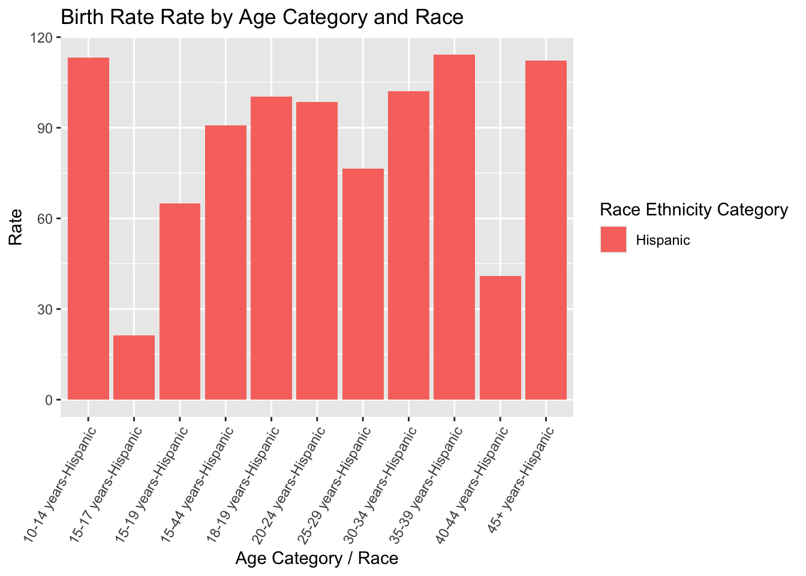
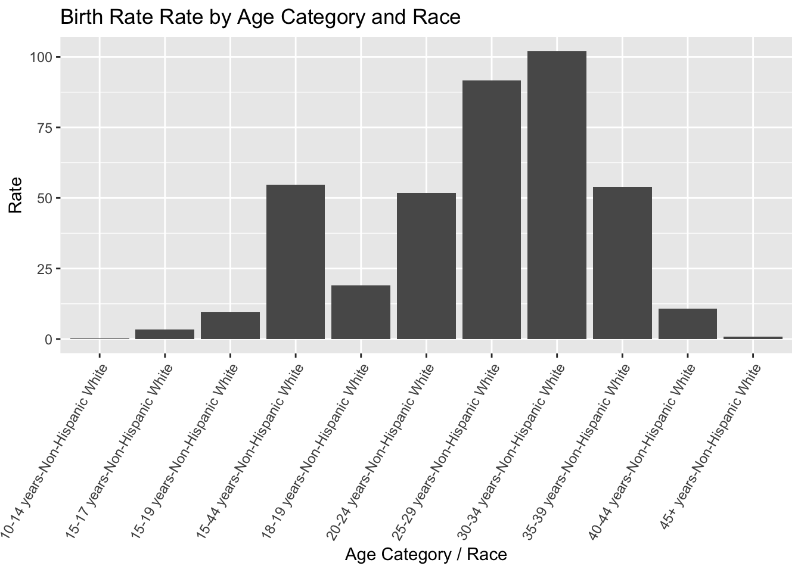

I accessed the data for this assignment at this link. I chose a data set from the National Center for Health Statistics (NCHS) that provides data on quarterly provisional estimates for selected birth indicators. These indicators include teen birth rate, low birth weight, NICU admissions, pre-term births, etc. These indicators are stratified by race/ethnicity and age groups. There is an overall Rate column that is subsetted into “per 100 births” or “per 1,000 population.”
I am now going to load any required packages along with the original, uncleaned data set.
library(readr)library(here)
here() starts at /Users/emmahardinparker/Desktop/BIOS8060E/emmahardinparker-MADA-portfolio
── Conflicts ────────────────────────────────────────── tidyverse_conflicts() ──
✖ dplyr::filter() masks stats::filter()
✖ dplyr::lag() masks stats::lag()
ℹ Use the conflicted package (<http://conflicted.r-lib.org/>) to force all conflicts to become errors
The data set has 1,110 observations and 8 variables. At first glance there doesn’t seem to be any NA values, but I am going to check using the NA values. After print nchs_na, I found that there were no NA values, however, I took that command out as it printed “FALSE” for every observation in the data set. Also, I noticed in the Significant column, that significant values are coded with asteriks. I could imagine that would make future exploratory analyses difficult, so I plan to recode significant values to 1 and non-significant values to 0.
To accomplish this I used the is.na() function to determine if there were any NA values in the data set. I then mutated the Significant column to treat the observations as characters (* or missing) by using as.character(). I then mutated a new variable, Significance_Status to recode the missing values as zeroes and the asteriks as ones.
Exploratory Data Analysis
I am now going to create an exploratory plot to see which race/ethnicity category had the largest birth rate by Year & Quarter.
filtered_race <- nchs_recode %>%filter(Race.Ethnicity.Category !="All races and origins") # Remove rows where 'Race' is "All"birth_rate_bar <- filtered_race %>%group_by(Year.and.Quarter) %>%filter(Topic =="Birth Rates") %>%ggplot(aes(x =interaction(Indicator, Race.Ethnicity.Category), y = Rate, fill = Race.Ethnicity.Category)) +geom_bar(stat ="identity", position ="dodge") +labs(title ="Birth Rate Rate by Age Category and Race",x ="Age Category / Race",y ="Rate") +scale_x_discrete(labels =function(x) gsub("\\.", "-", x)) +theme(axis.text.x =element_text(angle =60, hjust =1)) hispanic_rate_bar <- nchs_recode %>%filter(Race.Ethnicity.Category =="Hispanic") %>%filter(Topic =="Birth Rates") %>%group_by(Year.and.Quarter) %>%ggplot(aes(x =interaction(Indicator, Race.Ethnicity.Category), y = Rate, fill = Race.Ethnicity.Category)) +geom_bar(stat ="identity", position ="dodge") +labs(title ="Birth Rate Rate by Age Category and Race",x ="Age Category / Race",y ="Rate") +scale_x_discrete(labels =function(x) gsub("\\.", "-", x)) +theme(axis.text.x =element_text(angle =60, hjust =1)) white_rate_bar <- nchs_recode %>%filter(Race.Ethnicity.Category =="Non-Hispanic White") %>%filter(Topic =="Birth Rates") %>%group_by(Year.and.Quarter) %>%ggplot(aes(x =interaction(Indicator, Race.Ethnicity.Category), y = Rate)) +geom_bar(stat ="identity", position ="dodge") +labs(title ="Birth Rate Rate by Age Category and Race",x ="Age Category / Race",y ="Rate") +scale_x_discrete(labels =function(x) gsub("\\.", "-", x)) +theme(axis.text.x =element_text(angle =60, hjust =1)) +scale_color_viridis_d()black_rate_bar <- nchs_recode %>%filter(Race.Ethnicity.Category =="Non-Hispanic Black") %>%filter(Topic =="Birth Rates") %>%group_by(Year.and.Quarter) %>%ggplot(aes(x =interaction(Indicator, Race.Ethnicity.Category), y = Rate)) +geom_bar(stat ="identity", position ="dodge") +labs(title ="Birth Rate Rate by Age Category and Race",x ="Age Category / Race",y ="Rate") +scale_x_discrete(labels =function(x) gsub("\\.", "-", x)) +scale_color_viridis_b() +theme(axis.text.x =element_text(angle =45, hjust =1)) print(hispanic_rate_bar)
print(black_rate_bar)
print(white_rate_bar)
I am now going to create plots exploring the rate of low birthweight (per 100 births) by race
I am now going to create a similar plot concerning NICU admission rates per 100 births by race.
NICU <- filtered_race %>%filter(Topic.Subgroup =="NICU Admission Rates") %>%group_by(Race.Ethnicity.Category) %>%ggplot(aes(x =interaction(Indicator, Race.Ethnicity.Category), y = Rate, fill = Race.Ethnicity.Category)) +geom_bar(stat ="identity", position ="dodge") +labs(title ="NICU Admission Rates by Age Category and Race",x ="Race",y ="Rate") +scale_x_discrete(labels =function(x) gsub("\\.", "-", x)) +scale_color_identity() +theme(axis.text.x =element_text(angle =45, hjust =1)) print(NICU)
I am now going to create a similar plot exploring Teen Birth Rates by Age Category and Race
teen_birth <- filtered_race %>%filter(Topic.Subgroup =="Teen Birth Rates") %>%group_by(Race.Ethnicity.Category) %>%ggplot(aes(x =interaction(Indicator, Race.Ethnicity.Category), y = Rate, fill = Race.Ethnicity.Category)) +geom_bar(stat ="identity", position ="dodge") +labs(title =" Teen Birth Rate Rate by Age Category and Race",x ="Age Category / Race",y ="Rate") +scale_x_discrete(labels =function(x) gsub("\\.", "-", x)) +scale_color_viridis_b() +theme(axis.text.x =element_text(angle =45, hjust =1)) print(teen_birth)
This section contributed by KEVIN KOSEWICK.
For this section, I’ll create a synthetic dataset that attempts to mimic the original as closely as possible. To do this, I’ll scramble the variables (in the way that a synthetic scrambled set was produced in the module for synthetic data) that Emma explored originally and reproduce her analyses and see what we get.
#set seed for reproducabilityset.seed(123)# Create a copy of the original data framefiltered_copy <- filtered_race# Scramble the column in the copied data framefiltered_copy$Rate <-sample(filtered_race$Rate)#check the new scrambled set to make sure everything is the same except for the numbers we wanted to changesummary(filtered_copy)
Year.and.Quarter Topic Topic.Subgroup Indicator
Length:825 Length:825 Length:825 Length:825
Class :character Class :character Class :character Class :character
Mode :character Mode :character Mode :character Mode :character
Race.Ethnicity.Category Rate Unit Significant
Length:825 Min. : 0.10 Length:825 Length:825
Class :character 1st Qu.: 7.53 Class :character Class :character
Mode :character Median : 15.10 Mode :character Mode :character
Mean : 28.62
3rd Qu.: 49.20
Max. :114.30
Significance_Status
Min. :0.00000
1st Qu.:0.00000
Median :0.00000
Mean :0.06788
3rd Qu.:0.00000
Max. :1.00000
structure(filtered_copy)
Year.and.Quarter Topic
1 2023 Q3 Birth Rates
2 2023 Q3 Birth Rates
3 2023 Q3 Birth Rates
4 2023 Q3 Birth Rates
5 2023 Q3 Birth Rates
6 2023 Q3 Birth Rates
7 2023 Q3 Birth Rates
8 2023 Q3 Birth Rates
9 2023 Q3 Birth Rates
10 2023 Q3 Birth Rates
11 2023 Q3 Birth Rates
12 2023 Q3 Birth Rates
13 2023 Q3 Birth Rates
14 2023 Q3 Birth Rates
15 2023 Q3 Birth Rates
16 2023 Q3 Birth Rates
17 2023 Q3 Birth Rates
18 2023 Q3 Birth Rates
19 2023 Q3 Birth Rates
20 2023 Q3 Birth Rates
21 2023 Q3 Birth Rates
22 2023 Q3 Birth Rates
23 2023 Q3 Birth Rates
24 2023 Q3 Birth Rates
25 2023 Q3 Birth Rates
26 2023 Q3 Birth Rates
27 2023 Q3 Birth Rates
28 2023 Q3 Birth Rates
29 2023 Q3 Birth Rates
30 2023 Q3 Birth Rates
31 2023 Q3 Birth Rates
32 2023 Q3 Birth Rates
33 2023 Q3 Birth Rates
34 2023 Q3 Birth Rates
35 2023 Q3 Birth Rates
36 2023 Q3 Birth Rates
37 2023 Q3 Birth Rates
38 2023 Q3 Birth Rates
39 2023 Q3 Birth Rates
40 2023 Q3 Birthweight
41 2023 Q3 Birthweight
42 2023 Q3 Birthweight
43 2023 Q3 Gestational Age
44 2023 Q3 Gestational Age
45 2023 Q3 Gestational Age
46 2023 Q3 Gestational Age
47 2023 Q3 Gestational Age
48 2023 Q3 Gestational Age
49 2023 Q3 Gestational Age
50 2023 Q3 Gestational Age
51 2023 Q3 Gestational Age
52 2023 Q3 Gestational Age
53 2023 Q3 Gestational Age
54 2023 Q3 Gestational Age
55 2023 Q3 Gestational Age
56 2023 Q3 Gestational Age
57 2023 Q3 Gestational Age
58 2023 Q3 Gestational Age
59 2023 Q3 Gestational Age
60 2023 Q3 Gestational Age
61 2023 Q3 Method of Delivery
62 2023 Q3 Method of Delivery
63 2023 Q3 Method of Delivery
64 2023 Q3 Method of Delivery
65 2023 Q3 Method of Delivery
66 2023 Q3 Method of Delivery
67 2023 Q3 Method of Delivery
68 2023 Q3 Method of Delivery
69 2023 Q3 Method of Delivery
70 2023 Q3 NICU Admission
71 2023 Q3 NICU Admission
72 2023 Q3 NICU Admission
73 2023 Q3 Source of Payment for the Delivery
74 2023 Q3 Source of Payment for the Delivery
75 2023 Q3 Source of Payment for the Delivery
76 2023 Q2 Birth Rates
77 2023 Q2 Birth Rates
78 2023 Q2 Birth Rates
79 2023 Q2 Birth Rates
80 2023 Q2 Birth Rates
81 2023 Q2 Birth Rates
82 2023 Q2 Birth Rates
83 2023 Q2 Birth Rates
84 2023 Q2 Birth Rates
85 2023 Q2 Birth Rates
86 2023 Q2 Birth Rates
87 2023 Q2 Birth Rates
88 2023 Q2 Birth Rates
89 2023 Q2 Birth Rates
90 2023 Q2 Birth Rates
91 2023 Q2 Birth Rates
92 2023 Q2 Birth Rates
93 2023 Q2 Birth Rates
94 2023 Q2 Birth Rates
95 2023 Q2 Birth Rates
96 2023 Q2 Birth Rates
97 2023 Q2 Birth Rates
98 2023 Q2 Birth Rates
99 2023 Q2 Birth Rates
100 2023 Q2 Birth Rates
101 2023 Q2 Birth Rates
102 2023 Q2 Birth Rates
103 2023 Q2 Birth Rates
104 2023 Q2 Birth Rates
105 2023 Q2 Birth Rates
106 2023 Q2 Birth Rates
107 2023 Q2 Birth Rates
108 2023 Q2 Birth Rates
109 2023 Q2 Birth Rates
110 2023 Q2 Birth Rates
111 2023 Q2 Birth Rates
112 2023 Q2 Birth Rates
113 2023 Q2 Birth Rates
114 2023 Q2 Birth Rates
115 2023 Q2 Birthweight
116 2023 Q2 Birthweight
117 2023 Q2 Birthweight
118 2023 Q2 Gestational Age
119 2023 Q2 Gestational Age
120 2023 Q2 Gestational Age
121 2023 Q2 Gestational Age
122 2023 Q2 Gestational Age
123 2023 Q2 Gestational Age
124 2023 Q2 Gestational Age
125 2023 Q2 Gestational Age
126 2023 Q2 Gestational Age
127 2023 Q2 Gestational Age
128 2023 Q2 Gestational Age
129 2023 Q2 Gestational Age
130 2023 Q2 Gestational Age
131 2023 Q2 Gestational Age
132 2023 Q2 Gestational Age
133 2023 Q2 Gestational Age
134 2023 Q2 Gestational Age
135 2023 Q2 Gestational Age
136 2023 Q2 Method of Delivery
137 2023 Q2 Method of Delivery
138 2023 Q2 Method of Delivery
139 2023 Q2 Method of Delivery
140 2023 Q2 Method of Delivery
141 2023 Q2 Method of Delivery
142 2023 Q2 Method of Delivery
143 2023 Q2 Method of Delivery
144 2023 Q2 Method of Delivery
145 2023 Q2 NICU Admission
146 2023 Q2 NICU Admission
147 2023 Q2 NICU Admission
148 2023 Q2 Source of Payment for the Delivery
149 2023 Q2 Source of Payment for the Delivery
150 2023 Q2 Source of Payment for the Delivery
151 2023 Q1 Birth Rates
152 2023 Q1 Birth Rates
153 2023 Q1 Birth Rates
154 2023 Q1 Birth Rates
155 2023 Q1 Birth Rates
156 2023 Q1 Birth Rates
157 2023 Q1 Birth Rates
158 2023 Q1 Birth Rates
159 2023 Q1 Birth Rates
160 2023 Q1 Birth Rates
161 2023 Q1 Birth Rates
162 2023 Q1 Birth Rates
163 2023 Q1 Birth Rates
164 2023 Q1 Birth Rates
165 2023 Q1 Birth Rates
166 2023 Q1 Birth Rates
167 2023 Q1 Birth Rates
168 2023 Q1 Birth Rates
169 2023 Q1 Birth Rates
170 2023 Q1 Birth Rates
171 2023 Q1 Birth Rates
172 2023 Q1 Birth Rates
173 2023 Q1 Birth Rates
174 2023 Q1 Birth Rates
175 2023 Q1 Birth Rates
176 2023 Q1 Birth Rates
177 2023 Q1 Birth Rates
178 2023 Q1 Birth Rates
179 2023 Q1 Birth Rates
180 2023 Q1 Birth Rates
181 2023 Q1 Birth Rates
182 2023 Q1 Birth Rates
183 2023 Q1 Birth Rates
184 2023 Q1 Birth Rates
185 2023 Q1 Birth Rates
186 2023 Q1 Birth Rates
187 2023 Q1 Birth Rates
188 2023 Q1 Birth Rates
189 2023 Q1 Birth Rates
190 2023 Q1 Birthweight
191 2023 Q1 Birthweight
192 2023 Q1 Birthweight
193 2023 Q1 Gestational Age
194 2023 Q1 Gestational Age
195 2023 Q1 Gestational Age
196 2023 Q1 Gestational Age
197 2023 Q1 Gestational Age
198 2023 Q1 Gestational Age
199 2023 Q1 Gestational Age
200 2023 Q1 Gestational Age
201 2023 Q1 Gestational Age
202 2023 Q1 Gestational Age
203 2023 Q1 Gestational Age
204 2023 Q1 Gestational Age
205 2023 Q1 Gestational Age
206 2023 Q1 Gestational Age
207 2023 Q1 Gestational Age
208 2023 Q1 Gestational Age
209 2023 Q1 Gestational Age
210 2023 Q1 Gestational Age
211 2023 Q1 Method of Delivery
212 2023 Q1 Method of Delivery
213 2023 Q1 Method of Delivery
214 2023 Q1 Method of Delivery
215 2023 Q1 Method of Delivery
216 2023 Q1 Method of Delivery
217 2023 Q1 Method of Delivery
218 2023 Q1 Method of Delivery
219 2023 Q1 Method of Delivery
220 2023 Q1 NICU Admission
221 2023 Q1 NICU Admission
222 2023 Q1 NICU Admission
223 2023 Q1 Source of Payment for the Delivery
224 2023 Q1 Source of Payment for the Delivery
225 2023 Q1 Source of Payment for the Delivery
226 2022 Q4 Birth Rates
227 2022 Q4 Birth Rates
228 2022 Q4 Birth Rates
229 2022 Q4 Birth Rates
230 2022 Q4 Birth Rates
231 2022 Q4 Birth Rates
232 2022 Q4 Birth Rates
233 2022 Q4 Birth Rates
234 2022 Q4 Birth Rates
235 2022 Q4 Birth Rates
236 2022 Q4 Birth Rates
237 2022 Q4 Birth Rates
238 2022 Q4 Birth Rates
239 2022 Q4 Birth Rates
240 2022 Q4 Birth Rates
241 2022 Q4 Birth Rates
242 2022 Q4 Birth Rates
243 2022 Q4 Birth Rates
244 2022 Q4 Birth Rates
245 2022 Q4 Birth Rates
246 2022 Q4 Birth Rates
247 2022 Q4 Birth Rates
248 2022 Q4 Birth Rates
249 2022 Q4 Birth Rates
250 2022 Q4 Birth Rates
251 2022 Q4 Birth Rates
252 2022 Q4 Birth Rates
253 2022 Q4 Birth Rates
254 2022 Q4 Birth Rates
255 2022 Q4 Birth Rates
256 2022 Q4 Birth Rates
257 2022 Q4 Birth Rates
258 2022 Q4 Birth Rates
259 2022 Q4 Birth Rates
260 2022 Q4 Birth Rates
261 2022 Q4 Birth Rates
262 2022 Q4 Birth Rates
263 2022 Q4 Birth Rates
264 2022 Q4 Birth Rates
265 2022 Q4 Birthweight
266 2022 Q4 Birthweight
267 2022 Q4 Birthweight
268 2022 Q4 Gestational Age
269 2022 Q4 Gestational Age
270 2022 Q4 Gestational Age
271 2022 Q4 Gestational Age
272 2022 Q4 Gestational Age
273 2022 Q4 Gestational Age
274 2022 Q4 Gestational Age
275 2022 Q4 Gestational Age
276 2022 Q4 Gestational Age
277 2022 Q4 Gestational Age
278 2022 Q4 Gestational Age
279 2022 Q4 Gestational Age
280 2022 Q4 Gestational Age
281 2022 Q4 Gestational Age
282 2022 Q4 Gestational Age
283 2022 Q4 Gestational Age
284 2022 Q4 Gestational Age
285 2022 Q4 Gestational Age
286 2022 Q4 Method of Delivery
287 2022 Q4 Method of Delivery
288 2022 Q4 Method of Delivery
289 2022 Q4 Method of Delivery
290 2022 Q4 Method of Delivery
291 2022 Q4 Method of Delivery
292 2022 Q4 Method of Delivery
293 2022 Q4 Method of Delivery
294 2022 Q4 Method of Delivery
295 2022 Q4 NICU Admission
296 2022 Q4 NICU Admission
297 2022 Q4 NICU Admission
298 2022 Q4 Source of Payment for the Delivery
299 2022 Q4 Source of Payment for the Delivery
300 2022 Q4 Source of Payment for the Delivery
301 2022 Q3 Birth Rates
302 2022 Q3 Birth Rates
303 2022 Q3 Birth Rates
304 2022 Q3 Birth Rates
305 2022 Q3 Birth Rates
306 2022 Q3 Birth Rates
307 2022 Q3 Birth Rates
308 2022 Q3 Birth Rates
309 2022 Q3 Birth Rates
310 2022 Q3 Birth Rates
311 2022 Q3 Birth Rates
312 2022 Q3 Birth Rates
313 2022 Q3 Birth Rates
314 2022 Q3 Birth Rates
315 2022 Q3 Birth Rates
316 2022 Q3 Birth Rates
317 2022 Q3 Birth Rates
318 2022 Q3 Birth Rates
319 2022 Q3 Birth Rates
320 2022 Q3 Birth Rates
321 2022 Q3 Birth Rates
322 2022 Q3 Birth Rates
323 2022 Q3 Birth Rates
324 2022 Q3 Birth Rates
325 2022 Q3 Birth Rates
326 2022 Q3 Birth Rates
327 2022 Q3 Birth Rates
328 2022 Q3 Birth Rates
329 2022 Q3 Birth Rates
330 2022 Q3 Birth Rates
331 2022 Q3 Birth Rates
332 2022 Q3 Birth Rates
333 2022 Q3 Birth Rates
334 2022 Q3 Birth Rates
335 2022 Q3 Birth Rates
336 2022 Q3 Birth Rates
337 2022 Q3 Birth Rates
338 2022 Q3 Birth Rates
339 2022 Q3 Birth Rates
340 2022 Q3 Birthweight
341 2022 Q3 Birthweight
342 2022 Q3 Birthweight
343 2022 Q3 Gestational Age
344 2022 Q3 Gestational Age
345 2022 Q3 Gestational Age
346 2022 Q3 Gestational Age
347 2022 Q3 Gestational Age
348 2022 Q3 Gestational Age
349 2022 Q3 Gestational Age
350 2022 Q3 Gestational Age
351 2022 Q3 Gestational Age
352 2022 Q3 Gestational Age
353 2022 Q3 Gestational Age
354 2022 Q3 Gestational Age
355 2022 Q3 Gestational Age
356 2022 Q3 Gestational Age
357 2022 Q3 Gestational Age
358 2022 Q3 Gestational Age
359 2022 Q3 Gestational Age
360 2022 Q3 Gestational Age
361 2022 Q3 Method of Delivery
362 2022 Q3 Method of Delivery
363 2022 Q3 Method of Delivery
364 2022 Q3 Method of Delivery
365 2022 Q3 Method of Delivery
366 2022 Q3 Method of Delivery
367 2022 Q3 Method of Delivery
368 2022 Q3 Method of Delivery
369 2022 Q3 Method of Delivery
370 2022 Q3 NICU Admission
371 2022 Q3 NICU Admission
372 2022 Q3 NICU Admission
373 2022 Q3 Source of Payment for the Delivery
374 2022 Q3 Source of Payment for the Delivery
375 2022 Q3 Source of Payment for the Delivery
376 2022 Q2 Birth Rates
377 2022 Q2 Birth Rates
378 2022 Q2 Birth Rates
379 2022 Q2 Birth Rates
380 2022 Q2 Birth Rates
381 2022 Q2 Birth Rates
382 2022 Q2 Birth Rates
383 2022 Q2 Birth Rates
384 2022 Q2 Birth Rates
385 2022 Q2 Birth Rates
386 2022 Q2 Birth Rates
387 2022 Q2 Birth Rates
388 2022 Q2 Birth Rates
389 2022 Q2 Birth Rates
390 2022 Q2 Birth Rates
391 2022 Q2 Birth Rates
392 2022 Q2 Birth Rates
393 2022 Q2 Birth Rates
394 2022 Q2 Birth Rates
395 2022 Q2 Birth Rates
396 2022 Q2 Birth Rates
397 2022 Q2 Birth Rates
398 2022 Q2 Birth Rates
399 2022 Q2 Birth Rates
400 2022 Q2 Birth Rates
401 2022 Q2 Birth Rates
402 2022 Q2 Birth Rates
403 2022 Q2 Birth Rates
404 2022 Q2 Birth Rates
405 2022 Q2 Birth Rates
406 2022 Q2 Birth Rates
407 2022 Q2 Birth Rates
408 2022 Q2 Birth Rates
409 2022 Q2 Birth Rates
410 2022 Q2 Birth Rates
411 2022 Q2 Birth Rates
412 2022 Q2 Birth Rates
413 2022 Q2 Birth Rates
414 2022 Q2 Birth Rates
415 2022 Q2 Birthweight
416 2022 Q2 Birthweight
417 2022 Q2 Birthweight
418 2022 Q2 Gestational Age
419 2022 Q2 Gestational Age
420 2022 Q2 Gestational Age
421 2022 Q2 Gestational Age
422 2022 Q2 Gestational Age
423 2022 Q2 Gestational Age
424 2022 Q2 Gestational Age
425 2022 Q2 Gestational Age
426 2022 Q2 Gestational Age
427 2022 Q2 Gestational Age
428 2022 Q2 Gestational Age
429 2022 Q2 Gestational Age
430 2022 Q2 Gestational Age
431 2022 Q2 Gestational Age
432 2022 Q2 Gestational Age
433 2022 Q2 Gestational Age
434 2022 Q2 Gestational Age
435 2022 Q2 Gestational Age
436 2022 Q2 Method of Delivery
437 2022 Q2 Method of Delivery
438 2022 Q2 Method of Delivery
439 2022 Q2 Method of Delivery
440 2022 Q2 Method of Delivery
441 2022 Q2 Method of Delivery
442 2022 Q2 Method of Delivery
443 2022 Q2 Method of Delivery
444 2022 Q2 Method of Delivery
445 2022 Q2 NICU Admission
446 2022 Q2 NICU Admission
447 2022 Q2 NICU Admission
448 2022 Q2 Source of Payment for the Delivery
449 2022 Q2 Source of Payment for the Delivery
450 2022 Q2 Source of Payment for the Delivery
451 2022 Q1 Birth Rates
452 2022 Q1 Birth Rates
453 2022 Q1 Birth Rates
454 2022 Q1 Birth Rates
455 2022 Q1 Birth Rates
456 2022 Q1 Birth Rates
457 2022 Q1 Birth Rates
458 2022 Q1 Birth Rates
459 2022 Q1 Birth Rates
460 2022 Q1 Birth Rates
461 2022 Q1 Birth Rates
462 2022 Q1 Birth Rates
463 2022 Q1 Birth Rates
464 2022 Q1 Birth Rates
465 2022 Q1 Birth Rates
466 2022 Q1 Birth Rates
467 2022 Q1 Birth Rates
468 2022 Q1 Birth Rates
469 2022 Q1 Birth Rates
470 2022 Q1 Birth Rates
471 2022 Q1 Birth Rates
472 2022 Q1 Birth Rates
473 2022 Q1 Birth Rates
474 2022 Q1 Birth Rates
475 2022 Q1 Birth Rates
476 2022 Q1 Birth Rates
477 2022 Q1 Birth Rates
478 2022 Q1 Birth Rates
479 2022 Q1 Birth Rates
480 2022 Q1 Birth Rates
481 2022 Q1 Birth Rates
482 2022 Q1 Birth Rates
483 2022 Q1 Birth Rates
484 2022 Q1 Birth Rates
485 2022 Q1 Birth Rates
486 2022 Q1 Birth Rates
487 2022 Q1 Birth Rates
488 2022 Q1 Birth Rates
489 2022 Q1 Birth Rates
490 2022 Q1 Birthweight
491 2022 Q1 Birthweight
492 2022 Q1 Birthweight
493 2022 Q1 Gestational Age
494 2022 Q1 Gestational Age
495 2022 Q1 Gestational Age
496 2022 Q1 Gestational Age
497 2022 Q1 Gestational Age
498 2022 Q1 Gestational Age
499 2022 Q1 Gestational Age
500 2022 Q1 Gestational Age
501 2022 Q1 Gestational Age
502 2022 Q1 Gestational Age
503 2022 Q1 Gestational Age
504 2022 Q1 Gestational Age
505 2022 Q1 Gestational Age
506 2022 Q1 Gestational Age
507 2022 Q1 Gestational Age
508 2022 Q1 Gestational Age
509 2022 Q1 Gestational Age
510 2022 Q1 Gestational Age
511 2022 Q1 Method of Delivery
512 2022 Q1 Method of Delivery
513 2022 Q1 Method of Delivery
514 2022 Q1 Method of Delivery
515 2022 Q1 Method of Delivery
516 2022 Q1 Method of Delivery
517 2022 Q1 Method of Delivery
518 2022 Q1 Method of Delivery
519 2022 Q1 Method of Delivery
520 2022 Q1 NICU Admission
521 2022 Q1 NICU Admission
522 2022 Q1 NICU Admission
523 2022 Q1 Source of Payment for the Delivery
524 2022 Q1 Source of Payment for the Delivery
525 2022 Q1 Source of Payment for the Delivery
526 2021 Q4 Birth Rates
527 2021 Q4 Birth Rates
528 2021 Q4 Birth Rates
529 2021 Q4 Birth Rates
530 2021 Q4 Birth Rates
531 2021 Q4 Birth Rates
532 2021 Q4 Birth Rates
533 2021 Q4 Birth Rates
534 2021 Q4 Birth Rates
535 2021 Q4 Birth Rates
536 2021 Q4 Birth Rates
537 2021 Q4 Birth Rates
538 2021 Q4 Birth Rates
539 2021 Q4 Birth Rates
540 2021 Q4 Birth Rates
541 2021 Q4 Birth Rates
542 2021 Q4 Birth Rates
543 2021 Q4 Birth Rates
544 2021 Q4 Birth Rates
545 2021 Q4 Birth Rates
546 2021 Q4 Birth Rates
547 2021 Q4 Birth Rates
548 2021 Q4 Birth Rates
549 2021 Q4 Birth Rates
550 2021 Q4 Birth Rates
551 2021 Q4 Birth Rates
552 2021 Q4 Birth Rates
553 2021 Q4 Birth Rates
554 2021 Q4 Birth Rates
555 2021 Q4 Birth Rates
556 2021 Q4 Birth Rates
557 2021 Q4 Birth Rates
558 2021 Q4 Birth Rates
559 2021 Q4 Birth Rates
560 2021 Q4 Birth Rates
561 2021 Q4 Birth Rates
562 2021 Q4 Birth Rates
563 2021 Q4 Birth Rates
564 2021 Q4 Birth Rates
565 2021 Q4 Birthweight
566 2021 Q4 Birthweight
567 2021 Q4 Birthweight
568 2021 Q4 Gestational Age
569 2021 Q4 Gestational Age
570 2021 Q4 Gestational Age
571 2021 Q4 Gestational Age
572 2021 Q4 Gestational Age
573 2021 Q4 Gestational Age
574 2021 Q4 Gestational Age
575 2021 Q4 Gestational Age
576 2021 Q4 Gestational Age
577 2021 Q4 Gestational Age
578 2021 Q4 Gestational Age
579 2021 Q4 Gestational Age
580 2021 Q4 Gestational Age
581 2021 Q4 Gestational Age
582 2021 Q4 Gestational Age
583 2021 Q4 Gestational Age
584 2021 Q4 Gestational Age
585 2021 Q4 Gestational Age
586 2021 Q4 Method of Delivery
587 2021 Q4 Method of Delivery
588 2021 Q4 Method of Delivery
589 2021 Q4 Method of Delivery
590 2021 Q4 Method of Delivery
591 2021 Q4 Method of Delivery
592 2021 Q4 Method of Delivery
593 2021 Q4 Method of Delivery
594 2021 Q4 Method of Delivery
595 2021 Q4 NICU Admission
596 2021 Q4 NICU Admission
597 2021 Q4 NICU Admission
598 2021 Q4 Source of Payment for the Delivery
599 2021 Q4 Source of Payment for the Delivery
600 2021 Q4 Source of Payment for the Delivery
601 2021 Q3 Birth Rates
602 2021 Q3 Birth Rates
603 2021 Q3 Birth Rates
604 2021 Q3 Birth Rates
605 2021 Q3 Birth Rates
606 2021 Q3 Birth Rates
607 2021 Q3 Birth Rates
608 2021 Q3 Birth Rates
609 2021 Q3 Birth Rates
610 2021 Q3 Birth Rates
611 2021 Q3 Birth Rates
612 2021 Q3 Birth Rates
613 2021 Q3 Birth Rates
614 2021 Q3 Birth Rates
615 2021 Q3 Birth Rates
616 2021 Q3 Birth Rates
617 2021 Q3 Birth Rates
618 2021 Q3 Birth Rates
619 2021 Q3 Birth Rates
620 2021 Q3 Birth Rates
621 2021 Q3 Birth Rates
622 2021 Q3 Birth Rates
623 2021 Q3 Birth Rates
624 2021 Q3 Birth Rates
625 2021 Q3 Birth Rates
626 2021 Q3 Birth Rates
627 2021 Q3 Birth Rates
628 2021 Q3 Birth Rates
629 2021 Q3 Birth Rates
630 2021 Q3 Birth Rates
631 2021 Q3 Birth Rates
632 2021 Q3 Birth Rates
633 2021 Q3 Birth Rates
634 2021 Q3 Birth Rates
635 2021 Q3 Birth Rates
636 2021 Q3 Birth Rates
637 2021 Q3 Birth Rates
638 2021 Q3 Birth Rates
639 2021 Q3 Birth Rates
640 2021 Q3 Birthweight
641 2021 Q3 Birthweight
642 2021 Q3 Birthweight
643 2021 Q3 Gestational Age
644 2021 Q3 Gestational Age
645 2021 Q3 Gestational Age
646 2021 Q3 Gestational Age
647 2021 Q3 Gestational Age
648 2021 Q3 Gestational Age
649 2021 Q3 Gestational Age
650 2021 Q3 Gestational Age
651 2021 Q3 Gestational Age
652 2021 Q3 Gestational Age
653 2021 Q3 Gestational Age
654 2021 Q3 Gestational Age
655 2021 Q3 Gestational Age
656 2021 Q3 Gestational Age
657 2021 Q3 Gestational Age
658 2021 Q3 Gestational Age
659 2021 Q3 Gestational Age
660 2021 Q3 Gestational Age
661 2021 Q3 Method of Delivery
662 2021 Q3 Method of Delivery
663 2021 Q3 Method of Delivery
664 2021 Q3 Method of Delivery
665 2021 Q3 Method of Delivery
666 2021 Q3 Method of Delivery
667 2021 Q3 Method of Delivery
668 2021 Q3 Method of Delivery
669 2021 Q3 Method of Delivery
670 2021 Q3 NICU Admission
671 2021 Q3 NICU Admission
672 2021 Q3 NICU Admission
673 2021 Q3 Source of Payment for the Delivery
674 2021 Q3 Source of Payment for the Delivery
675 2021 Q3 Source of Payment for the Delivery
676 2021 Q2 Birth Rates
677 2021 Q2 Birth Rates
678 2021 Q2 Birth Rates
679 2021 Q2 Birth Rates
680 2021 Q2 Birth Rates
681 2021 Q2 Birth Rates
682 2021 Q2 Birth Rates
683 2021 Q2 Birth Rates
684 2021 Q2 Birth Rates
685 2021 Q2 Birth Rates
686 2021 Q2 Birth Rates
687 2021 Q2 Birth Rates
688 2021 Q2 Birth Rates
689 2021 Q2 Birth Rates
690 2021 Q2 Birth Rates
691 2021 Q2 Birth Rates
692 2021 Q2 Birth Rates
693 2021 Q2 Birth Rates
694 2021 Q2 Birth Rates
695 2021 Q2 Birth Rates
696 2021 Q2 Birth Rates
697 2021 Q2 Birth Rates
698 2021 Q2 Birth Rates
699 2021 Q2 Birth Rates
700 2021 Q2 Birth Rates
701 2021 Q2 Birth Rates
702 2021 Q2 Birth Rates
703 2021 Q2 Birth Rates
704 2021 Q2 Birth Rates
705 2021 Q2 Birth Rates
706 2021 Q2 Birth Rates
707 2021 Q2 Birth Rates
708 2021 Q2 Birth Rates
709 2021 Q2 Birth Rates
710 2021 Q2 Birth Rates
711 2021 Q2 Birth Rates
712 2021 Q2 Birth Rates
713 2021 Q2 Birth Rates
714 2021 Q2 Birth Rates
715 2021 Q2 Birthweight
716 2021 Q2 Birthweight
717 2021 Q2 Birthweight
718 2021 Q2 Gestational Age
719 2021 Q2 Gestational Age
720 2021 Q2 Gestational Age
721 2021 Q2 Gestational Age
722 2021 Q2 Gestational Age
723 2021 Q2 Gestational Age
724 2021 Q2 Gestational Age
725 2021 Q2 Gestational Age
726 2021 Q2 Gestational Age
727 2021 Q2 Gestational Age
728 2021 Q2 Gestational Age
729 2021 Q2 Gestational Age
730 2021 Q2 Gestational Age
731 2021 Q2 Gestational Age
732 2021 Q2 Gestational Age
733 2021 Q2 Gestational Age
734 2021 Q2 Gestational Age
735 2021 Q2 Gestational Age
736 2021 Q2 Method of Delivery
737 2021 Q2 Method of Delivery
738 2021 Q2 Method of Delivery
739 2021 Q2 Method of Delivery
740 2021 Q2 Method of Delivery
741 2021 Q2 Method of Delivery
742 2021 Q2 Method of Delivery
743 2021 Q2 Method of Delivery
744 2021 Q2 Method of Delivery
745 2021 Q2 NICU Admission
746 2021 Q2 NICU Admission
747 2021 Q2 NICU Admission
748 2021 Q2 Source of Payment for the Delivery
749 2021 Q2 Source of Payment for the Delivery
750 2021 Q2 Source of Payment for the Delivery
751 2021 Q1 Birth Rates
752 2021 Q1 Birth Rates
753 2021 Q1 Birth Rates
754 2021 Q1 Birth Rates
755 2021 Q1 Birth Rates
756 2021 Q1 Birth Rates
757 2021 Q1 Birth Rates
758 2021 Q1 Birth Rates
759 2021 Q1 Birth Rates
760 2021 Q1 Birth Rates
761 2021 Q1 Birth Rates
762 2021 Q1 Birth Rates
763 2021 Q1 Birth Rates
764 2021 Q1 Birth Rates
765 2021 Q1 Birth Rates
766 2021 Q1 Birth Rates
767 2021 Q1 Birth Rates
768 2021 Q1 Birth Rates
769 2021 Q1 Birth Rates
770 2021 Q1 Birth Rates
771 2021 Q1 Birth Rates
772 2021 Q1 Birth Rates
773 2021 Q1 Birth Rates
774 2021 Q1 Birth Rates
775 2021 Q1 Birth Rates
776 2021 Q1 Birth Rates
777 2021 Q1 Birth Rates
778 2021 Q1 Birth Rates
779 2021 Q1 Birth Rates
780 2021 Q1 Birth Rates
781 2021 Q1 Birth Rates
782 2021 Q1 Birth Rates
783 2021 Q1 Birth Rates
784 2021 Q1 Birth Rates
785 2021 Q1 Birth Rates
786 2021 Q1 Birth Rates
787 2021 Q1 Birth Rates
788 2021 Q1 Birth Rates
789 2021 Q1 Birth Rates
790 2021 Q1 Birthweight
791 2021 Q1 Birthweight
792 2021 Q1 Birthweight
793 2021 Q1 Gestational Age
794 2021 Q1 Gestational Age
795 2021 Q1 Gestational Age
796 2021 Q1 Gestational Age
797 2021 Q1 Gestational Age
798 2021 Q1 Gestational Age
799 2021 Q1 Gestational Age
800 2021 Q1 Gestational Age
801 2021 Q1 Gestational Age
802 2021 Q1 Gestational Age
803 2021 Q1 Gestational Age
804 2021 Q1 Gestational Age
805 2021 Q1 Gestational Age
806 2021 Q1 Gestational Age
807 2021 Q1 Gestational Age
808 2021 Q1 Gestational Age
809 2021 Q1 Gestational Age
810 2021 Q1 Gestational Age
811 2021 Q1 Method of Delivery
812 2021 Q1 Method of Delivery
813 2021 Q1 Method of Delivery
814 2021 Q1 Method of Delivery
815 2021 Q1 Method of Delivery
816 2021 Q1 Method of Delivery
817 2021 Q1 Method of Delivery
818 2021 Q1 Method of Delivery
819 2021 Q1 Method of Delivery
820 2021 Q1 NICU Admission
821 2021 Q1 NICU Admission
822 2021 Q1 NICU Admission
823 2021 Q1 Source of Payment for the Delivery
824 2021 Q1 Source of Payment for the Delivery
825 2021 Q1 Source of Payment for the Delivery
Topic.Subgroup
1 Age-specific Birth Rates
2 Age-specific Birth Rates
3 Age-specific Birth Rates
4 Age-specific Birth Rates
5 Age-specific Birth Rates
6 Age-specific Birth Rates
7 Age-specific Birth Rates
8 Age-specific Birth Rates
9 Age-specific Birth Rates
10 Age-specific Birth Rates
11 Age-specific Birth Rates
12 Age-specific Birth Rates
13 Age-specific Birth Rates
14 Age-specific Birth Rates
15 Age-specific Birth Rates
16 Age-specific Birth Rates
17 Age-specific Birth Rates
18 Age-specific Birth Rates
19 Age-specific Birth Rates
20 Age-specific Birth Rates
21 Age-specific Birth Rates
22 Age-specific Birth Rates
23 Age-specific Birth Rates
24 Age-specific Birth Rates
25 General Fertility Rates
26 General Fertility Rates
27 General Fertility Rates
28 Teen Birth Rates
29 Teen Birth Rates
30 Teen Birth Rates
31 Teen Birth Rates
32 Teen Birth Rates
33 Teen Birth Rates
34 Teen Birth Rates
35 Teen Birth Rates
36 Teen Birth Rates
37 Teen Birth Rates
38 Teen Birth Rates
39 Teen Birth Rates
40 Low Birthweight Rates
41 Low Birthweight Rates
42 Low Birthweight Rates
43 Preterm Birth Rates
44 Preterm Birth Rates
45 Preterm Birth Rates
46 Preterm Birth Rates
47 Preterm Birth Rates
48 Preterm Birth Rates
49 Preterm Birth Rates
50 Preterm Birth Rates
51 Preterm Birth Rates
52 Term Birth Rates
53 Term Birth Rates
54 Term Birth Rates
55 Term Birth Rates
56 Term Birth Rates
57 Term Birth Rates
58 Term Birth Rates
59 Term Birth Rates
60 Term Birth Rates
61 Cesarean Delivery Rates
62 Cesarean Delivery Rates
63 Cesarean Delivery Rates
64 Cesarean Delivery Rates
65 Cesarean Delivery Rates
66 Cesarean Delivery Rates
67 Vaginal Birth After Cesarean Delivery Rates
68 Vaginal Birth After Cesarean Delivery Rates
69 Vaginal Birth After Cesarean Delivery Rates
70 NICU Admission Rates
71 NICU Admission Rates
72 NICU Admission Rates
73 Medicaid
74 Medicaid
75 Medicaid
76 Age-specific Birth Rates
77 Age-specific Birth Rates
78 Age-specific Birth Rates
79 Age-specific Birth Rates
80 Age-specific Birth Rates
81 Age-specific Birth Rates
82 Age-specific Birth Rates
83 Age-specific Birth Rates
84 Age-specific Birth Rates
85 Age-specific Birth Rates
86 Age-specific Birth Rates
87 Age-specific Birth Rates
88 Age-specific Birth Rates
89 Age-specific Birth Rates
90 Age-specific Birth Rates
91 Age-specific Birth Rates
92 Age-specific Birth Rates
93 Age-specific Birth Rates
94 Age-specific Birth Rates
95 Age-specific Birth Rates
96 Age-specific Birth Rates
97 Age-specific Birth Rates
98 Age-specific Birth Rates
99 Age-specific Birth Rates
100 General Fertility Rates
101 General Fertility Rates
102 General Fertility Rates
103 Teen Birth Rates
104 Teen Birth Rates
105 Teen Birth Rates
106 Teen Birth Rates
107 Teen Birth Rates
108 Teen Birth Rates
109 Teen Birth Rates
110 Teen Birth Rates
111 Teen Birth Rates
112 Teen Birth Rates
113 Teen Birth Rates
114 Teen Birth Rates
115 Low Birthweight Rates
116 Low Birthweight Rates
117 Low Birthweight Rates
118 Preterm Birth Rates
119 Preterm Birth Rates
120 Preterm Birth Rates
121 Preterm Birth Rates
122 Preterm Birth Rates
123 Preterm Birth Rates
124 Preterm Birth Rates
125 Preterm Birth Rates
126 Preterm Birth Rates
127 Term Birth Rates
128 Term Birth Rates
129 Term Birth Rates
130 Term Birth Rates
131 Term Birth Rates
132 Term Birth Rates
133 Term Birth Rates
134 Term Birth Rates
135 Term Birth Rates
136 Cesarean Delivery Rates
137 Cesarean Delivery Rates
138 Cesarean Delivery Rates
139 Cesarean Delivery Rates
140 Cesarean Delivery Rates
141 Cesarean Delivery Rates
142 Vaginal Birth After Cesarean Delivery Rates
143 Vaginal Birth After Cesarean Delivery Rates
144 Vaginal Birth After Cesarean Delivery Rates
145 NICU Admission Rates
146 NICU Admission Rates
147 NICU Admission Rates
148 Medicaid
149 Medicaid
150 Medicaid
151 Age-specific Birth Rates
152 Age-specific Birth Rates
153 Age-specific Birth Rates
154 Age-specific Birth Rates
155 Age-specific Birth Rates
156 Age-specific Birth Rates
157 Age-specific Birth Rates
158 Age-specific Birth Rates
159 Age-specific Birth Rates
160 Age-specific Birth Rates
161 Age-specific Birth Rates
162 Age-specific Birth Rates
163 Age-specific Birth Rates
164 Age-specific Birth Rates
165 Age-specific Birth Rates
166 Age-specific Birth Rates
167 Age-specific Birth Rates
168 Age-specific Birth Rates
169 Age-specific Birth Rates
170 Age-specific Birth Rates
171 Age-specific Birth Rates
172 Age-specific Birth Rates
173 Age-specific Birth Rates
174 Age-specific Birth Rates
175 General Fertility Rates
176 General Fertility Rates
177 General Fertility Rates
178 Teen Birth Rates
179 Teen Birth Rates
180 Teen Birth Rates
181 Teen Birth Rates
182 Teen Birth Rates
183 Teen Birth Rates
184 Teen Birth Rates
185 Teen Birth Rates
186 Teen Birth Rates
187 Teen Birth Rates
188 Teen Birth Rates
189 Teen Birth Rates
190 Low Birthweight Rates
191 Low Birthweight Rates
192 Low Birthweight Rates
193 Preterm Birth Rates
194 Preterm Birth Rates
195 Preterm Birth Rates
196 Preterm Birth Rates
197 Preterm Birth Rates
198 Preterm Birth Rates
199 Preterm Birth Rates
200 Preterm Birth Rates
201 Preterm Birth Rates
202 Term Birth Rates
203 Term Birth Rates
204 Term Birth Rates
205 Term Birth Rates
206 Term Birth Rates
207 Term Birth Rates
208 Term Birth Rates
209 Term Birth Rates
210 Term Birth Rates
211 Cesarean Delivery Rates
212 Cesarean Delivery Rates
213 Cesarean Delivery Rates
214 Cesarean Delivery Rates
215 Cesarean Delivery Rates
216 Cesarean Delivery Rates
217 Vaginal Birth After Cesarean Delivery Rates
218 Vaginal Birth After Cesarean Delivery Rates
219 Vaginal Birth After Cesarean Delivery Rates
220 NICU Admission Rates
221 NICU Admission Rates
222 NICU Admission Rates
223 Medicaid
224 Medicaid
225 Medicaid
226 Age-specific Birth Rates
227 Age-specific Birth Rates
228 Age-specific Birth Rates
229 Age-specific Birth Rates
230 Age-specific Birth Rates
231 Age-specific Birth Rates
232 Age-specific Birth Rates
233 Age-specific Birth Rates
234 Age-specific Birth Rates
235 Age-specific Birth Rates
236 Age-specific Birth Rates
237 Age-specific Birth Rates
238 Age-specific Birth Rates
239 Age-specific Birth Rates
240 Age-specific Birth Rates
241 Age-specific Birth Rates
242 Age-specific Birth Rates
243 Age-specific Birth Rates
244 Age-specific Birth Rates
245 Age-specific Birth Rates
246 Age-specific Birth Rates
247 Age-specific Birth Rates
248 Age-specific Birth Rates
249 Age-specific Birth Rates
250 General Fertility Rates
251 General Fertility Rates
252 General Fertility Rates
253 Teen Birth Rates
254 Teen Birth Rates
255 Teen Birth Rates
256 Teen Birth Rates
257 Teen Birth Rates
258 Teen Birth Rates
259 Teen Birth Rates
260 Teen Birth Rates
261 Teen Birth Rates
262 Teen Birth Rates
263 Teen Birth Rates
264 Teen Birth Rates
265 Low Birthweight Rates
266 Low Birthweight Rates
267 Low Birthweight Rates
268 Preterm Birth Rates
269 Preterm Birth Rates
270 Preterm Birth Rates
271 Preterm Birth Rates
272 Preterm Birth Rates
273 Preterm Birth Rates
274 Preterm Birth Rates
275 Preterm Birth Rates
276 Preterm Birth Rates
277 Term Birth Rates
278 Term Birth Rates
279 Term Birth Rates
280 Term Birth Rates
281 Term Birth Rates
282 Term Birth Rates
283 Term Birth Rates
284 Term Birth Rates
285 Term Birth Rates
286 Cesarean Delivery Rates
287 Cesarean Delivery Rates
288 Cesarean Delivery Rates
289 Cesarean Delivery Rates
290 Cesarean Delivery Rates
291 Cesarean Delivery Rates
292 Vaginal Birth After Cesarean Delivery Rates
293 Vaginal Birth After Cesarean Delivery Rates
294 Vaginal Birth After Cesarean Delivery Rates
295 NICU Admission Rates
296 NICU Admission Rates
297 NICU Admission Rates
298 Medicaid
299 Medicaid
300 Medicaid
301 Age-specific Birth Rates
302 Age-specific Birth Rates
303 Age-specific Birth Rates
304 Age-specific Birth Rates
305 Age-specific Birth Rates
306 Age-specific Birth Rates
307 Age-specific Birth Rates
308 Age-specific Birth Rates
309 Age-specific Birth Rates
310 Age-specific Birth Rates
311 Age-specific Birth Rates
312 Age-specific Birth Rates
313 Age-specific Birth Rates
314 Age-specific Birth Rates
315 Age-specific Birth Rates
316 Age-specific Birth Rates
317 Age-specific Birth Rates
318 Age-specific Birth Rates
319 Age-specific Birth Rates
320 Age-specific Birth Rates
321 Age-specific Birth Rates
322 Age-specific Birth Rates
323 Age-specific Birth Rates
324 Age-specific Birth Rates
325 General Fertility Rates
326 General Fertility Rates
327 General Fertility Rates
328 Teen Birth Rates
329 Teen Birth Rates
330 Teen Birth Rates
331 Teen Birth Rates
332 Teen Birth Rates
333 Teen Birth Rates
334 Teen Birth Rates
335 Teen Birth Rates
336 Teen Birth Rates
337 Teen Birth Rates
338 Teen Birth Rates
339 Teen Birth Rates
340 Low Birthweight Rates
341 Low Birthweight Rates
342 Low Birthweight Rates
343 Preterm Birth Rates
344 Preterm Birth Rates
345 Preterm Birth Rates
346 Preterm Birth Rates
347 Preterm Birth Rates
348 Preterm Birth Rates
349 Preterm Birth Rates
350 Preterm Birth Rates
351 Preterm Birth Rates
352 Term Birth Rates
353 Term Birth Rates
354 Term Birth Rates
355 Term Birth Rates
356 Term Birth Rates
357 Term Birth Rates
358 Term Birth Rates
359 Term Birth Rates
360 Term Birth Rates
361 Cesarean Delivery Rates
362 Cesarean Delivery Rates
363 Cesarean Delivery Rates
364 Cesarean Delivery Rates
365 Cesarean Delivery Rates
366 Cesarean Delivery Rates
367 Vaginal Birth After Cesarean Delivery Rates
368 Vaginal Birth After Cesarean Delivery Rates
369 Vaginal Birth After Cesarean Delivery Rates
370 NICU Admission Rates
371 NICU Admission Rates
372 NICU Admission Rates
373 Medicaid
374 Medicaid
375 Medicaid
376 Age-specific Birth Rates
377 Age-specific Birth Rates
378 Age-specific Birth Rates
379 Age-specific Birth Rates
380 Age-specific Birth Rates
381 Age-specific Birth Rates
382 Age-specific Birth Rates
383 Age-specific Birth Rates
384 Age-specific Birth Rates
385 Age-specific Birth Rates
386 Age-specific Birth Rates
387 Age-specific Birth Rates
388 Age-specific Birth Rates
389 Age-specific Birth Rates
390 Age-specific Birth Rates
391 Age-specific Birth Rates
392 Age-specific Birth Rates
393 Age-specific Birth Rates
394 Age-specific Birth Rates
395 Age-specific Birth Rates
396 Age-specific Birth Rates
397 Age-specific Birth Rates
398 Age-specific Birth Rates
399 Age-specific Birth Rates
400 General Fertility Rates
401 General Fertility Rates
402 General Fertility Rates
403 Teen Birth Rates
404 Teen Birth Rates
405 Teen Birth Rates
406 Teen Birth Rates
407 Teen Birth Rates
408 Teen Birth Rates
409 Teen Birth Rates
410 Teen Birth Rates
411 Teen Birth Rates
412 Teen Birth Rates
413 Teen Birth Rates
414 Teen Birth Rates
415 Low Birthweight Rates
416 Low Birthweight Rates
417 Low Birthweight Rates
418 Preterm Birth Rates
419 Preterm Birth Rates
420 Preterm Birth Rates
421 Preterm Birth Rates
422 Preterm Birth Rates
423 Preterm Birth Rates
424 Preterm Birth Rates
425 Preterm Birth Rates
426 Preterm Birth Rates
427 Term Birth Rates
428 Term Birth Rates
429 Term Birth Rates
430 Term Birth Rates
431 Term Birth Rates
432 Term Birth Rates
433 Term Birth Rates
434 Term Birth Rates
435 Term Birth Rates
436 Cesarean Delivery Rates
437 Cesarean Delivery Rates
438 Cesarean Delivery Rates
439 Cesarean Delivery Rates
440 Cesarean Delivery Rates
441 Cesarean Delivery Rates
442 Vaginal Birth After Cesarean Delivery Rates
443 Vaginal Birth After Cesarean Delivery Rates
444 Vaginal Birth After Cesarean Delivery Rates
445 NICU Admission Rates
446 NICU Admission Rates
447 NICU Admission Rates
448 Medicaid
449 Medicaid
450 Medicaid
451 Age-specific Birth Rates
452 Age-specific Birth Rates
453 Age-specific Birth Rates
454 Age-specific Birth Rates
455 Age-specific Birth Rates
456 Age-specific Birth Rates
457 Age-specific Birth Rates
458 Age-specific Birth Rates
459 Age-specific Birth Rates
460 Age-specific Birth Rates
461 Age-specific Birth Rates
462 Age-specific Birth Rates
463 Age-specific Birth Rates
464 Age-specific Birth Rates
465 Age-specific Birth Rates
466 Age-specific Birth Rates
467 Age-specific Birth Rates
468 Age-specific Birth Rates
469 Age-specific Birth Rates
470 Age-specific Birth Rates
471 Age-specific Birth Rates
472 Age-specific Birth Rates
473 Age-specific Birth Rates
474 Age-specific Birth Rates
475 General Fertility Rates
476 General Fertility Rates
477 General Fertility Rates
478 Teen Birth Rates
479 Teen Birth Rates
480 Teen Birth Rates
481 Teen Birth Rates
482 Teen Birth Rates
483 Teen Birth Rates
484 Teen Birth Rates
485 Teen Birth Rates
486 Teen Birth Rates
487 Teen Birth Rates
488 Teen Birth Rates
489 Teen Birth Rates
490 Low Birthweight Rates
491 Low Birthweight Rates
492 Low Birthweight Rates
493 Preterm Birth Rates
494 Preterm Birth Rates
495 Preterm Birth Rates
496 Preterm Birth Rates
497 Preterm Birth Rates
498 Preterm Birth Rates
499 Preterm Birth Rates
500 Preterm Birth Rates
501 Preterm Birth Rates
502 Term Birth Rates
503 Term Birth Rates
504 Term Birth Rates
505 Term Birth Rates
506 Term Birth Rates
507 Term Birth Rates
508 Term Birth Rates
509 Term Birth Rates
510 Term Birth Rates
511 Cesarean Delivery Rates
512 Cesarean Delivery Rates
513 Cesarean Delivery Rates
514 Cesarean Delivery Rates
515 Cesarean Delivery Rates
516 Cesarean Delivery Rates
517 Vaginal Birth After Cesarean Delivery Rates
518 Vaginal Birth After Cesarean Delivery Rates
519 Vaginal Birth After Cesarean Delivery Rates
520 NICU Admission Rates
521 NICU Admission Rates
522 NICU Admission Rates
523 Medicaid
524 Medicaid
525 Medicaid
526 Age-specific Birth Rates
527 Age-specific Birth Rates
528 Age-specific Birth Rates
529 Age-specific Birth Rates
530 Age-specific Birth Rates
531 Age-specific Birth Rates
532 Age-specific Birth Rates
533 Age-specific Birth Rates
534 Age-specific Birth Rates
535 Age-specific Birth Rates
536 Age-specific Birth Rates
537 Age-specific Birth Rates
538 Age-specific Birth Rates
539 Age-specific Birth Rates
540 Age-specific Birth Rates
541 Age-specific Birth Rates
542 Age-specific Birth Rates
543 Age-specific Birth Rates
544 Age-specific Birth Rates
545 Age-specific Birth Rates
546 Age-specific Birth Rates
547 Age-specific Birth Rates
548 Age-specific Birth Rates
549 Age-specific Birth Rates
550 General Fertility Rates
551 General Fertility Rates
552 General Fertility Rates
553 Teen Birth Rates
554 Teen Birth Rates
555 Teen Birth Rates
556 Teen Birth Rates
557 Teen Birth Rates
558 Teen Birth Rates
559 Teen Birth Rates
560 Teen Birth Rates
561 Teen Birth Rates
562 Teen Birth Rates
563 Teen Birth Rates
564 Teen Birth Rates
565 Low Birthweight Rates
566 Low Birthweight Rates
567 Low Birthweight Rates
568 Preterm Birth Rates
569 Preterm Birth Rates
570 Preterm Birth Rates
571 Preterm Birth Rates
572 Preterm Birth Rates
573 Preterm Birth Rates
574 Preterm Birth Rates
575 Preterm Birth Rates
576 Preterm Birth Rates
577 Term Birth Rates
578 Term Birth Rates
579 Term Birth Rates
580 Term Birth Rates
581 Term Birth Rates
582 Term Birth Rates
583 Term Birth Rates
584 Term Birth Rates
585 Term Birth Rates
586 Cesarean Delivery Rates
587 Cesarean Delivery Rates
588 Cesarean Delivery Rates
589 Cesarean Delivery Rates
590 Cesarean Delivery Rates
591 Cesarean Delivery Rates
592 Vaginal Birth After Cesarean Delivery Rates
593 Vaginal Birth After Cesarean Delivery Rates
594 Vaginal Birth After Cesarean Delivery Rates
595 NICU Admission Rates
596 NICU Admission Rates
597 NICU Admission Rates
598 Medicaid
599 Medicaid
600 Medicaid
601 Age-specific Birth Rates
602 Age-specific Birth Rates
603 Age-specific Birth Rates
604 Age-specific Birth Rates
605 Age-specific Birth Rates
606 Age-specific Birth Rates
607 Age-specific Birth Rates
608 Age-specific Birth Rates
609 Age-specific Birth Rates
610 Age-specific Birth Rates
611 Age-specific Birth Rates
612 Age-specific Birth Rates
613 Age-specific Birth Rates
614 Age-specific Birth Rates
615 Age-specific Birth Rates
616 Age-specific Birth Rates
617 Age-specific Birth Rates
618 Age-specific Birth Rates
619 Age-specific Birth Rates
620 Age-specific Birth Rates
621 Age-specific Birth Rates
622 Age-specific Birth Rates
623 Age-specific Birth Rates
624 Age-specific Birth Rates
625 General Fertility Rates
626 General Fertility Rates
627 General Fertility Rates
628 Teen Birth Rates
629 Teen Birth Rates
630 Teen Birth Rates
631 Teen Birth Rates
632 Teen Birth Rates
633 Teen Birth Rates
634 Teen Birth Rates
635 Teen Birth Rates
636 Teen Birth Rates
637 Teen Birth Rates
638 Teen Birth Rates
639 Teen Birth Rates
640 Low Birthweight Rates
641 Low Birthweight Rates
642 Low Birthweight Rates
643 Preterm Birth Rates
644 Preterm Birth Rates
645 Preterm Birth Rates
646 Preterm Birth Rates
647 Preterm Birth Rates
648 Preterm Birth Rates
649 Preterm Birth Rates
650 Preterm Birth Rates
651 Preterm Birth Rates
652 Term Birth Rates
653 Term Birth Rates
654 Term Birth Rates
655 Term Birth Rates
656 Term Birth Rates
657 Term Birth Rates
658 Term Birth Rates
659 Term Birth Rates
660 Term Birth Rates
661 Cesarean Delivery Rates
662 Cesarean Delivery Rates
663 Cesarean Delivery Rates
664 Cesarean Delivery Rates
665 Cesarean Delivery Rates
666 Cesarean Delivery Rates
667 Vaginal Birth After Cesarean Delivery Rates
668 Vaginal Birth After Cesarean Delivery Rates
669 Vaginal Birth After Cesarean Delivery Rates
670 NICU Admission Rates
671 NICU Admission Rates
672 NICU Admission Rates
673 Medicaid
674 Medicaid
675 Medicaid
676 Age-specific Birth Rates
677 Age-specific Birth Rates
678 Age-specific Birth Rates
679 Age-specific Birth Rates
680 Age-specific Birth Rates
681 Age-specific Birth Rates
682 Age-specific Birth Rates
683 Age-specific Birth Rates
684 Age-specific Birth Rates
685 Age-specific Birth Rates
686 Age-specific Birth Rates
687 Age-specific Birth Rates
688 Age-specific Birth Rates
689 Age-specific Birth Rates
690 Age-specific Birth Rates
691 Age-specific Birth Rates
692 Age-specific Birth Rates
693 Age-specific Birth Rates
694 Age-specific Birth Rates
695 Age-specific Birth Rates
696 Age-specific Birth Rates
697 Age-specific Birth Rates
698 Age-specific Birth Rates
699 Age-specific Birth Rates
700 General Fertility Rates
701 General Fertility Rates
702 General Fertility Rates
703 Teen Birth Rates
704 Teen Birth Rates
705 Teen Birth Rates
706 Teen Birth Rates
707 Teen Birth Rates
708 Teen Birth Rates
709 Teen Birth Rates
710 Teen Birth Rates
711 Teen Birth Rates
712 Teen Birth Rates
713 Teen Birth Rates
714 Teen Birth Rates
715 Low Birthweight Rates
716 Low Birthweight Rates
717 Low Birthweight Rates
718 Preterm Birth Rates
719 Preterm Birth Rates
720 Preterm Birth Rates
721 Preterm Birth Rates
722 Preterm Birth Rates
723 Preterm Birth Rates
724 Preterm Birth Rates
725 Preterm Birth Rates
726 Preterm Birth Rates
727 Term Birth Rates
728 Term Birth Rates
729 Term Birth Rates
730 Term Birth Rates
731 Term Birth Rates
732 Term Birth Rates
733 Term Birth Rates
734 Term Birth Rates
735 Term Birth Rates
736 Cesarean Delivery Rates
737 Cesarean Delivery Rates
738 Cesarean Delivery Rates
739 Cesarean Delivery Rates
740 Cesarean Delivery Rates
741 Cesarean Delivery Rates
742 Vaginal Birth After Cesarean Delivery Rates
743 Vaginal Birth After Cesarean Delivery Rates
744 Vaginal Birth After Cesarean Delivery Rates
745 NICU Admission Rates
746 NICU Admission Rates
747 NICU Admission Rates
748 Medicaid
749 Medicaid
750 Medicaid
751 Age-specific Birth Rates
752 Age-specific Birth Rates
753 Age-specific Birth Rates
754 Age-specific Birth Rates
755 Age-specific Birth Rates
756 Age-specific Birth Rates
757 Age-specific Birth Rates
758 Age-specific Birth Rates
759 Age-specific Birth Rates
760 Age-specific Birth Rates
761 Age-specific Birth Rates
762 Age-specific Birth Rates
763 Age-specific Birth Rates
764 Age-specific Birth Rates
765 Age-specific Birth Rates
766 Age-specific Birth Rates
767 Age-specific Birth Rates
768 Age-specific Birth Rates
769 Age-specific Birth Rates
770 Age-specific Birth Rates
771 Age-specific Birth Rates
772 Age-specific Birth Rates
773 Age-specific Birth Rates
774 Age-specific Birth Rates
775 General Fertility Rates
776 General Fertility Rates
777 General Fertility Rates
778 Teen Birth Rates
779 Teen Birth Rates
780 Teen Birth Rates
781 Teen Birth Rates
782 Teen Birth Rates
783 Teen Birth Rates
784 Teen Birth Rates
785 Teen Birth Rates
786 Teen Birth Rates
787 Teen Birth Rates
788 Teen Birth Rates
789 Teen Birth Rates
790 Low Birthweight Rates
791 Low Birthweight Rates
792 Low Birthweight Rates
793 Preterm Birth Rates
794 Preterm Birth Rates
795 Preterm Birth Rates
796 Preterm Birth Rates
797 Preterm Birth Rates
798 Preterm Birth Rates
799 Preterm Birth Rates
800 Preterm Birth Rates
801 Preterm Birth Rates
802 Term Birth Rates
803 Term Birth Rates
804 Term Birth Rates
805 Term Birth Rates
806 Term Birth Rates
807 Term Birth Rates
808 Term Birth Rates
809 Term Birth Rates
810 Term Birth Rates
811 Cesarean Delivery Rates
812 Cesarean Delivery Rates
813 Cesarean Delivery Rates
814 Cesarean Delivery Rates
815 Cesarean Delivery Rates
816 Cesarean Delivery Rates
817 Vaginal Birth After Cesarean Delivery Rates
818 Vaginal Birth After Cesarean Delivery Rates
819 Vaginal Birth After Cesarean Delivery Rates
820 NICU Admission Rates
821 NICU Admission Rates
822 NICU Admission Rates
823 Medicaid
824 Medicaid
825 Medicaid
Indicator Race.Ethnicity.Category Rate
1 10-14 years Hispanic 7.91
2 10-14 years Non-Hispanic Black 100.20
3 10-14 years Non-Hispanic White 0.40
4 15-19 years Hispanic 0.30
5 15-19 years Non-Hispanic Black 2.26
6 15-19 years Non-Hispanic White 13.60
7 20-24 years Hispanic 2.60
8 20-24 years Non-Hispanic Black 64.10
9 20-24 years Non-Hispanic White 21.10
10 25-29 years Hispanic 15.40
11 25-29 years Non-Hispanic Black 77.70
12 25-29 years Non-Hispanic White 64.00
13 30-34 years Hispanic 31.10
14 30-34 years Non-Hispanic Black 0.40
15 30-34 years Non-Hispanic White 0.10
16 35-39 years Hispanic 49.60
17 35-39 years Non-Hispanic Black 40.50
18 35-39 years Non-Hispanic White 59.70
19 40-44 years Hispanic 7.15
20 40-44 years Non-Hispanic Black 10.14
21 40-44 years Non-Hispanic White 55.40
22 45+ years Hispanic 54.40
23 45+ years Non-Hispanic Black 14.40
24 45+ years Non-Hispanic White 9.48
25 15-44 years Hispanic 50.25
26 15-44 years Non-Hispanic Black 52.60
27 15-44 years Non-Hispanic White 31.80
28 10-14 years Hispanic 31.20
29 10-14 years Non-Hispanic Black 13.80
30 10-14 years Non-Hispanic White 0.10
31 15-17 years Hispanic 58.40
32 15-17 years Non-Hispanic Black 14.70
33 15-17 years Non-Hispanic White 14.40
34 18-19 years Hispanic 7.83
35 18-19 years Non-Hispanic Black 10.20
36 18-19 years Non-Hispanic White 61.50
37 15-19 years Hispanic 1.50
38 15-19 years Non-Hispanic Black 50.60
39 15-19 years Non-Hispanic White 5.61
40 Low birthweight (Less than 2,500g) Hispanic 64.40
41 Low birthweight (Less than 2,500g) Non-Hispanic Black 59.50
42 Low birthweight (Less than 2,500g) Non-Hispanic White 14.40
43 Early preterm (<34 weeks) Hispanic 30.80
44 Early preterm (<34 weeks) Non-Hispanic Black 49.28
45 Early preterm (<34 weeks) Non-Hispanic White 9.30
46 Late preterm (34-36 weeks) Hispanic 31.00
47 Late preterm (34-36 weeks) Non-Hispanic Black 14.75
48 Late preterm (34-36 weeks) Non-Hispanic White 25.50
49 Total preterm (<37 weeks) Hispanic 9.75
50 Total preterm (<37 weeks) Non-Hispanic Black 0.10
51 Total preterm (<37 weeks) Non-Hispanic White 14.70
52 Early term (37-38 weeks) Hispanic 30.11
53 Early term (37-38 weeks) Non-Hispanic Black 64.60
54 Early term (37-38 weeks) Non-Hispanic White 14.83
55 Full term (39-40 weeks) Hispanic 49.07
56 Full term (39-40 weeks) Non-Hispanic Black 99.30
57 Full term (39-40 weeks) Non-Hispanic White 58.50
58 Late term (41 weeks) Hispanic 58.90
59 Late term (41 weeks) Non-Hispanic Black 0.10
60 Late term (41 weeks) Non-Hispanic White 14.73
61 Cesarean Hispanic 9.50
62 Cesarean Non-Hispanic Black 9.00
63 Cesarean Non-Hispanic White 9.30
64 Low-risk Cesarean Hispanic 58.10
65 Low-risk Cesarean Non-Hispanic Black 8.70
66 Low-risk Cesarean Non-Hispanic White 50.30
67 Vaginal Birth After Cesarean Delivery Hispanic 0.40
68 Vaginal Birth After Cesarean Delivery Non-Hispanic Black 3.84
69 Vaginal Birth After Cesarean Delivery Non-Hispanic White 25.40
70 NICU Admission Hispanic 40.00
71 NICU Admission Non-Hispanic Black 25.30
72 NICU Admission Non-Hispanic White 101.90
73 Medicaid Hispanic 15.10
74 Medicaid Non-Hispanic Black 39.60
75 Medicaid Non-Hispanic White 75.80
76 10-14 years Hispanic 32.72
77 10-14 years Non-Hispanic Black 78.70
78 10-14 years Non-Hispanic White 91.80
79 15-19 years Hispanic 25.30
80 15-19 years Non-Hispanic Black 10.19
81 15-19 years Non-Hispanic White 31.70
82 20-24 years Hispanic 13.00
83 20-24 years Non-Hispanic Black 7.47
84 20-24 years Non-Hispanic White 37.30
85 25-29 years Hispanic 74.10
86 25-29 years Non-Hispanic Black 25.90
87 25-29 years Non-Hispanic White 3.20
88 30-34 years Hispanic 54.30
89 30-34 years Non-Hispanic Black 0.10
90 30-34 years Non-Hispanic White 19.10
91 35-39 years Hispanic 14.60
92 35-39 years Non-Hispanic Black 30.90
93 35-39 years Non-Hispanic White 113.60
94 40-44 years Hispanic 98.80
95 40-44 years Non-Hispanic Black 7.10
96 40-44 years Non-Hispanic White 9.45
97 45+ years Hispanic 64.60
98 45+ years Non-Hispanic Black 0.30
99 45+ years Non-Hispanic White 36.80
100 15-44 years Hispanic 90.60
101 15-44 years Non-Hispanic Black 105.90
102 15-44 years Non-Hispanic White 0.10
103 10-14 years Hispanic 30.17
104 10-14 years Non-Hispanic Black 36.80
105 10-14 years Non-Hispanic White 92.00
106 15-17 years Hispanic 113.00
107 15-17 years Non-Hispanic Black 52.40
108 15-17 years Non-Hispanic White 20.20
109 18-19 years Hispanic 14.00
110 18-19 years Non-Hispanic Black 30.90
111 18-19 years Non-Hispanic White 0.30
112 15-19 years Hispanic 25.20
113 15-19 years Non-Hispanic Black 79.00
114 15-19 years Non-Hispanic White 114.30
115 Low birthweight (Less than 2,500g) Hispanic 57.70
116 Low birthweight (Less than 2,500g) Non-Hispanic Black 20.20
117 Low birthweight (Less than 2,500g) Non-Hispanic White 29.10
118 Early preterm (<34 weeks) Hispanic 19.70
119 Early preterm (<34 weeks) Non-Hispanic Black 56.60
120 Early preterm (<34 weeks) Non-Hispanic White 55.24
121 Late preterm (34-36 weeks) Hispanic 7.03
122 Late preterm (34-36 weeks) Non-Hispanic Black 102.70
123 Late preterm (34-36 weeks) Non-Hispanic White 9.00
124 Total preterm (<37 weeks) Hispanic 92.40
125 Total preterm (<37 weeks) Non-Hispanic Black 36.80
126 Total preterm (<37 weeks) Non-Hispanic White 21.40
127 Early term (37-38 weeks) Hispanic 40.60
128 Early term (37-38 weeks) Non-Hispanic Black 25.50
129 Early term (37-38 weeks) Non-Hispanic White 69.60
130 Full term (39-40 weeks) Hispanic 10.00
131 Full term (39-40 weeks) Non-Hispanic Black 53.10
132 Full term (39-40 weeks) Non-Hispanic White 7.45
133 Late term (41 weeks) Hispanic 22.80
134 Late term (41 weeks) Non-Hispanic Black 8.80
135 Late term (41 weeks) Non-Hispanic White 98.00
136 Cesarean Hispanic 14.68
137 Cesarean Non-Hispanic Black 4.88
138 Cesarean Non-Hispanic White 2.25
139 Low-risk Cesarean Hispanic 51.50
140 Low-risk Cesarean Non-Hispanic Black 14.00
141 Low-risk Cesarean Non-Hispanic White 12.90
142 Vaginal Birth After Cesarean Delivery Hispanic 79.20
143 Vaginal Birth After Cesarean Delivery Non-Hispanic Black 30.34
144 Vaginal Birth After Cesarean Delivery Non-Hispanic White 52.00
145 NICU Admission Hispanic 52.80
146 NICU Admission Non-Hispanic Black 0.30
147 NICU Admission Non-Hispanic White 47.70
148 Medicaid Hispanic 58.00
149 Medicaid Non-Hispanic Black 3.20
150 Medicaid Non-Hispanic White 49.60
151 10-14 years Hispanic 0.30
152 10-14 years Non-Hispanic Black 9.10
153 10-14 years Non-Hispanic White 6.87
154 15-19 years Hispanic 1.10
155 15-19 years Non-Hispanic Black 55.36
156 15-19 years Non-Hispanic White 32.44
157 20-24 years Hispanic 66.10
158 20-24 years Non-Hispanic Black 27.37
159 20-24 years Non-Hispanic White 1.30
160 25-29 years Hispanic 46.60
161 25-29 years Non-Hispanic Black 9.20
162 25-29 years Non-Hispanic White 12.80
163 30-34 years Hispanic 7.95
164 30-34 years Non-Hispanic Black 9.00
165 30-34 years Non-Hispanic White 1.30
166 35-39 years Hispanic 14.55
167 35-39 years Non-Hispanic Black 14.58
168 35-39 years Non-Hispanic White 7.87
169 40-44 years Hispanic 17.60
170 40-44 years Non-Hispanic Black 7.18
171 40-44 years Non-Hispanic White 53.00
172 45+ years Hispanic 78.50
173 45+ years Non-Hispanic Black 0.40
174 45+ years Non-Hispanic White 28.20
175 15-44 years Hispanic 97.50
176 15-44 years Non-Hispanic Black 113.80
177 15-44 years Non-Hispanic White 25.60
178 10-14 years Hispanic 37.50
179 10-14 years Non-Hispanic Black 20.80
180 10-14 years Non-Hispanic White 53.60
181 15-17 years Hispanic 36.80
182 15-17 years Non-Hispanic Black 23.00
183 15-17 years Non-Hispanic White 29.69
184 18-19 years Hispanic 55.25
185 18-19 years Non-Hispanic Black 58.40
186 18-19 years Non-Hispanic White 9.40
187 15-19 years Hispanic 31.50
188 15-19 years Non-Hispanic Black 52.50
189 15-19 years Non-Hispanic White 7.46
190 Low birthweight (Less than 2,500g) Hispanic 21.70
191 Low birthweight (Less than 2,500g) Non-Hispanic Black 53.30
192 Low birthweight (Less than 2,500g) Non-Hispanic White 3.75
193 Early preterm (<34 weeks) Hispanic 56.79
194 Early preterm (<34 weeks) Non-Hispanic Black 83.10
195 Early preterm (<34 weeks) Non-Hispanic White 47.40
196 Late preterm (34-36 weeks) Hispanic 57.45
197 Late preterm (34-36 weeks) Non-Hispanic Black 27.69
198 Late preterm (34-36 weeks) Non-Hispanic White 2.28
199 Total preterm (<37 weeks) Hispanic 9.67
200 Total preterm (<37 weeks) Non-Hispanic Black 28.03
201 Total preterm (<37 weeks) Non-Hispanic White 14.70
202 Early term (37-38 weeks) Hispanic 51.30
203 Early term (37-38 weeks) Non-Hispanic Black 20.90
204 Early term (37-38 weeks) Non-Hispanic White 26.13
205 Full term (39-40 weeks) Hispanic 79.70
206 Full term (39-40 weeks) Non-Hispanic Black 31.44
207 Full term (39-40 weeks) Non-Hispanic White 0.30
208 Late term (41 weeks) Hispanic 100.90
209 Late term (41 weeks) Non-Hispanic Black 7.18
210 Late term (41 weeks) Non-Hispanic White 9.10
211 Cesarean Hispanic 7.55
212 Cesarean Non-Hispanic Black 0.40
213 Cesarean Non-Hispanic White 102.80
214 Low-risk Cesarean Hispanic 0.40
215 Low-risk Cesarean Non-Hispanic Black 32.27
216 Low-risk Cesarean Non-Hispanic White 23.00
217 Vaginal Birth After Cesarean Delivery Hispanic 10.03
218 Vaginal Birth After Cesarean Delivery Non-Hispanic Black 27.90
219 Vaginal Birth After Cesarean Delivery Non-Hispanic White 80.30
220 NICU Admission Hispanic 7.07
221 NICU Admission Non-Hispanic Black 14.54
222 NICU Admission Non-Hispanic White 55.08
223 Medicaid Hispanic 40.90
224 Medicaid Non-Hispanic Black 64.20
225 Medicaid Non-Hispanic White 9.30
226 10-14 years Hispanic 29.20
227 10-14 years Non-Hispanic Black 3.79
228 10-14 years Non-Hispanic White 9.00
229 15-19 years Hispanic 0.40
230 15-19 years Non-Hispanic Black 41.20
231 15-19 years Non-Hispanic White 5.63
232 20-24 years Hispanic 10.08
233 20-24 years Non-Hispanic Black 57.20
234 20-24 years Non-Hispanic White 3.10
235 25-29 years Hispanic 9.60
236 25-29 years Non-Hispanic Black 92.00
237 25-29 years Non-Hispanic White 0.30
238 30-34 years Hispanic 0.90
239 30-34 years Non-Hispanic Black 56.80
240 30-34 years Non-Hispanic White 55.21
241 35-39 years Hispanic 58.49
242 35-39 years Non-Hispanic Black 0.30
243 35-39 years Non-Hispanic White 13.80
244 40-44 years Hispanic 8.70
245 40-44 years Non-Hispanic Black 50.40
246 40-44 years Non-Hispanic White 9.72
247 45+ years Hispanic 4.36
248 45+ years Non-Hispanic Black 31.10
249 45+ years Non-Hispanic White 20.20
250 15-44 years Hispanic 25.50
251 15-44 years Non-Hispanic Black 1.20
252 15-44 years Non-Hispanic White 64.80
253 10-14 years Hispanic 78.80
254 10-14 years Non-Hispanic Black 2.62
255 10-14 years Non-Hispanic White 1.40
256 15-17 years Hispanic 0.30
257 15-17 years Non-Hispanic Black 0.70
258 15-17 years Non-Hispanic White 27.80
259 18-19 years Hispanic 17.60
260 18-19 years Non-Hispanic Black 49.80
261 18-19 years Non-Hispanic White 53.40
262 15-19 years Hispanic 36.80
263 15-19 years Non-Hispanic Black 14.30
264 15-19 years Non-Hispanic White 0.30
265 Low birthweight (Less than 2,500g) Hispanic 9.10
266 Low birthweight (Less than 2,500g) Non-Hispanic Black 12.30
267 Low birthweight (Less than 2,500g) Non-Hispanic White 90.50
268 Early preterm (<34 weeks) Hispanic 5.54
269 Early preterm (<34 weeks) Non-Hispanic Black 3.00
270 Early preterm (<34 weeks) Non-Hispanic White 0.90
271 Late preterm (34-36 weeks) Hispanic 10.70
272 Late preterm (34-36 weeks) Non-Hispanic Black 0.70
273 Late preterm (34-36 weeks) Non-Hispanic White 81.90
274 Total preterm (<37 weeks) Hispanic 0.30
275 Total preterm (<37 weeks) Non-Hispanic Black 15.80
276 Total preterm (<37 weeks) Non-Hispanic White 0.10
277 Early term (37-38 weeks) Hispanic 31.50
278 Early term (37-38 weeks) Non-Hispanic Black 66.20
279 Early term (37-38 weeks) Non-Hispanic White 81.70
280 Full term (39-40 weeks) Hispanic 7.57
281 Full term (39-40 weeks) Non-Hispanic Black 7.87
282 Full term (39-40 weeks) Non-Hispanic White 3.70
283 Late term (41 weeks) Hispanic 102.20
284 Late term (41 weeks) Non-Hispanic Black 4.53
285 Late term (41 weeks) Non-Hispanic White 13.00
286 Cesarean Hispanic 10.60
287 Cesarean Non-Hispanic Black 9.38
288 Cesarean Non-Hispanic White 1.10
289 Low-risk Cesarean Hispanic 0.30
290 Low-risk Cesarean Non-Hispanic Black 59.00
291 Low-risk Cesarean Non-Hispanic White 0.30
292 Vaginal Birth After Cesarean Delivery Hispanic 88.60
293 Vaginal Birth After Cesarean Delivery Non-Hispanic Black 20.40
294 Vaginal Birth After Cesarean Delivery Non-Hispanic White 4.87
295 NICU Admission Hispanic 9.50
296 NICU Admission Non-Hispanic Black 87.30
297 NICU Admission Non-Hispanic White 25.60
298 Medicaid Hispanic 6.93
299 Medicaid Non-Hispanic Black 0.30
300 Medicaid Non-Hispanic White 92.30
301 10-14 years Hispanic 9.10
302 10-14 years Non-Hispanic Black 9.50
303 10-14 years Non-Hispanic White 25.50
304 15-19 years Hispanic 57.40
305 15-19 years Non-Hispanic Black 59.80
306 15-19 years Non-Hispanic White 2.30
307 20-24 years Hispanic 31.90
308 20-24 years Non-Hispanic Black 7.12
309 20-24 years Non-Hispanic White 80.30
310 25-29 years Hispanic 21.00
311 25-29 years Non-Hispanic Black 25.20
312 25-29 years Non-Hispanic White 36.80
313 30-34 years Hispanic 27.82
314 30-34 years Non-Hispanic Black 0.40
315 30-34 years Non-Hispanic White 5.55
316 35-39 years Hispanic 2.22
317 35-39 years Non-Hispanic Black 64.00
318 35-39 years Non-Hispanic White 13.70
319 40-44 years Hispanic 51.00
320 40-44 years Non-Hispanic Black 9.71
321 40-44 years Non-Hispanic White 0.90
322 45+ years Hispanic 0.30
323 45+ years Non-Hispanic Black 99.70
324 45+ years Non-Hispanic White 39.80
325 15-44 years Hispanic 4.91
326 15-44 years Non-Hispanic Black 32.49
327 15-44 years Non-Hispanic White 1.40
328 10-14 years Hispanic 9.15
329 10-14 years Non-Hispanic Black 7.18
330 10-14 years Non-Hispanic White 9.10
331 15-17 years Hispanic 65.60
332 15-17 years Non-Hispanic Black 3.10
333 15-17 years Non-Hispanic White 0.30
334 18-19 years Hispanic 112.80
335 18-19 years Non-Hispanic Black 4.32
336 18-19 years Non-Hispanic White 9.70
337 15-19 years Hispanic 58.90
338 15-19 years Non-Hispanic Black 21.20
339 15-19 years Non-Hispanic White 53.70
340 Low birthweight (Less than 2,500g) Hispanic 58.30
341 Low birthweight (Less than 2,500g) Non-Hispanic Black 13.00
342 Low birthweight (Less than 2,500g) Non-Hispanic White 32.37
343 Early preterm (<34 weeks) Hispanic 57.30
344 Early preterm (<34 weeks) Non-Hispanic Black 4.92
345 Early preterm (<34 weeks) Non-Hispanic White 13.40
346 Late preterm (34-36 weeks) Hispanic 9.49
347 Late preterm (34-36 weeks) Non-Hispanic Black 68.10
348 Late preterm (34-36 weeks) Non-Hispanic White 8.90
349 Total preterm (<37 weeks) Hispanic 17.70
350 Total preterm (<37 weeks) Non-Hispanic Black 0.40
351 Total preterm (<37 weeks) Non-Hispanic White 9.00
352 Early term (37-38 weeks) Hispanic 9.90
353 Early term (37-38 weeks) Non-Hispanic Black 26.57
354 Early term (37-38 weeks) Non-Hispanic White 57.26
355 Full term (39-40 weeks) Hispanic 59.00
356 Full term (39-40 weeks) Non-Hispanic Black 7.12
357 Full term (39-40 weeks) Non-Hispanic White 27.80
358 Late term (41 weeks) Hispanic 21.10
359 Late term (41 weeks) Non-Hispanic Black 19.40
360 Late term (41 weeks) Non-Hispanic White 31.10
361 Cesarean Hispanic 9.92
362 Cesarean Non-Hispanic Black 14.80
363 Cesarean Non-Hispanic White 40.10
364 Low-risk Cesarean Hispanic 30.00
365 Low-risk Cesarean Non-Hispanic Black 41.70
366 Low-risk Cesarean Non-Hispanic White 4.87
367 Vaginal Birth After Cesarean Delivery Hispanic 0.30
368 Vaginal Birth After Cesarean Delivery Non-Hispanic Black 78.40
369 Vaginal Birth After Cesarean Delivery Non-Hispanic White 14.62
370 NICU Admission Hispanic 5.67
371 NICU Admission Non-Hispanic Black 13.20
372 NICU Admission Non-Hispanic White 54.90
373 Medicaid Hispanic 40.10
374 Medicaid Non-Hispanic Black 17.20
375 Medicaid Non-Hispanic White 21.40
376 10-14 years Hispanic 99.40
377 10-14 years Non-Hispanic Black 21.00
378 10-14 years Non-Hispanic White 2.26
379 15-19 years Hispanic 14.55
380 15-19 years Non-Hispanic Black 20.90
381 15-19 years Non-Hispanic White 7.08
382 20-24 years Hispanic 57.70
383 20-24 years Non-Hispanic Black 55.62
384 20-24 years Non-Hispanic White 2.31
385 25-29 years Hispanic 0.10
386 25-29 years Non-Hispanic Black 48.81
387 25-29 years Non-Hispanic White 101.40
388 30-34 years Hispanic 0.10
389 30-34 years Non-Hispanic Black 28.90
390 30-34 years Non-Hispanic White 5.53
391 35-39 years Hispanic 59.10
392 35-39 years Non-Hispanic Black 0.10
393 35-39 years Non-Hispanic White 50.40
394 40-44 years Hispanic 9.79
395 40-44 years Non-Hispanic Black 14.75
396 40-44 years Non-Hispanic White 21.30
397 45+ years Hispanic 0.90
398 45+ years Non-Hispanic Black 2.62
399 45+ years Non-Hispanic White 0.10
400 15-44 years Hispanic 57.13
401 15-44 years Non-Hispanic Black 65.10
402 15-44 years Non-Hispanic White 15.70
403 10-14 years Hispanic 5.60
404 10-14 years Non-Hispanic Black 104.20
405 10-14 years Non-Hispanic White 0.10
406 15-17 years Hispanic 14.20
407 15-17 years Non-Hispanic Black 0.30
408 15-17 years Non-Hispanic White 25.00
409 18-19 years Hispanic 9.76
410 18-19 years Non-Hispanic Black 20.20
411 18-19 years Non-Hispanic White 53.10
412 15-19 years Hispanic 25.80
413 15-19 years Non-Hispanic Black 8.80
414 15-19 years Non-Hispanic White 12.90
415 Low birthweight (Less than 2,500g) Hispanic 25.10
416 Low birthweight (Less than 2,500g) Non-Hispanic Black 9.00
417 Low birthweight (Less than 2,500g) Non-Hispanic White 91.00
418 Early preterm (<34 weeks) Hispanic 38.80
419 Early preterm (<34 weeks) Non-Hispanic Black 22.80
420 Early preterm (<34 weeks) Non-Hispanic White 83.00
421 Late preterm (34-36 weeks) Hispanic 19.70
422 Late preterm (34-36 weeks) Non-Hispanic Black 21.70
423 Late preterm (34-36 weeks) Non-Hispanic White 15.20
424 Total preterm (<37 weeks) Hispanic 13.70
425 Total preterm (<37 weeks) Non-Hispanic Black 39.50
426 Total preterm (<37 weeks) Non-Hispanic White 0.80
427 Early term (37-38 weeks) Hispanic 31.60
428 Early term (37-38 weeks) Non-Hispanic Black 58.10
429 Early term (37-38 weeks) Non-Hispanic White 7.18
430 Full term (39-40 weeks) Hispanic 7.55
431 Full term (39-40 weeks) Non-Hispanic Black 10.60
432 Full term (39-40 weeks) Non-Hispanic White 10.06
433 Late term (41 weeks) Hispanic 90.90
434 Late term (41 weeks) Non-Hispanic Black 9.80
435 Late term (41 weeks) Non-Hispanic White 39.80
436 Cesarean Hispanic 30.13
437 Cesarean Non-Hispanic Black 3.20
438 Cesarean Non-Hispanic White 8.90
439 Low-risk Cesarean Hispanic 0.30
440 Low-risk Cesarean Non-Hispanic Black 0.10
441 Low-risk Cesarean Non-Hispanic White 2.64
442 Vaginal Birth After Cesarean Delivery Hispanic 8.70
443 Vaginal Birth After Cesarean Delivery Non-Hispanic Black 33.00
444 Vaginal Birth After Cesarean Delivery Non-Hispanic White 14.10
445 NICU Admission Hispanic 9.00
446 NICU Admission Non-Hispanic Black 31.10
447 NICU Admission Non-Hispanic White 10.15
448 Medicaid Hispanic 0.30
449 Medicaid Non-Hispanic Black 79.40
450 Medicaid Non-Hispanic White 7.85
451 10-14 years Hispanic 2.60
452 10-14 years Non-Hispanic Black 9.67
453 10-14 years Non-Hispanic White 30.03
454 15-19 years Hispanic 91.90
455 15-19 years Non-Hispanic Black 7.89
456 15-19 years Non-Hispanic White 21.40
457 20-24 years Hispanic 9.90
458 20-24 years Non-Hispanic Black 111.00
459 20-24 years Non-Hispanic White 0.10
460 25-29 years Hispanic 57.93
461 25-29 years Non-Hispanic Black 9.20
462 25-29 years Non-Hispanic White 3.70
463 30-34 years Hispanic 20.40
464 30-34 years Non-Hispanic Black 31.90
465 30-34 years Non-Hispanic White 36.70
466 35-39 years Hispanic 21.80
467 35-39 years Non-Hispanic Black 9.80
468 35-39 years Non-Hispanic White 30.90
469 40-44 years Hispanic 102.30
470 40-44 years Non-Hispanic Black 56.93
471 40-44 years Non-Hispanic White 58.21
472 45+ years Hispanic 56.30
473 45+ years Non-Hispanic Black 32.87
474 45+ years Non-Hispanic White 10.60
475 15-44 years Hispanic 91.80
476 15-44 years Non-Hispanic Black 12.60
477 15-44 years Non-Hispanic White 27.52
478 10-14 years Hispanic 14.00
479 10-14 years Non-Hispanic Black 48.63
480 10-14 years Non-Hispanic White 0.30
481 15-17 years Hispanic 90.80
482 15-17 years Non-Hispanic Black 1.10
483 15-17 years Non-Hispanic White 91.90
484 18-19 years Hispanic 52.20
485 18-19 years Non-Hispanic Black 9.44
486 18-19 years Non-Hispanic White 0.10
487 15-19 years Hispanic 14.50
488 15-19 years Non-Hispanic Black 15.00
489 15-19 years Non-Hispanic White 14.00
490 Low birthweight (Less than 2,500g) Hispanic 13.00
491 Low birthweight (Less than 2,500g) Non-Hispanic Black 1.10
492 Low birthweight (Less than 2,500g) Non-Hispanic White 90.30
493 Early preterm (<34 weeks) Hispanic 31.70
494 Early preterm (<34 weeks) Non-Hispanic Black 50.10
495 Early preterm (<34 weeks) Non-Hispanic White 9.30
496 Late preterm (34-36 weeks) Hispanic 28.60
497 Late preterm (34-36 weeks) Non-Hispanic Black 3.84
498 Late preterm (34-36 weeks) Non-Hispanic White 13.80
499 Total preterm (<37 weeks) Hispanic 13.30
500 Total preterm (<37 weeks) Non-Hispanic Black 49.10
501 Total preterm (<37 weeks) Non-Hispanic White 7.16
502 Early term (37-38 weeks) Hispanic 21.20
503 Early term (37-38 weeks) Non-Hispanic Black 10.60
504 Early term (37-38 weeks) Non-Hispanic White 3.90
505 Full term (39-40 weeks) Hispanic 62.20
506 Full term (39-40 weeks) Non-Hispanic Black 2.63
507 Full term (39-40 weeks) Non-Hispanic White 31.80
508 Late term (41 weeks) Hispanic 21.40
509 Late term (41 weeks) Non-Hispanic Black 52.10
510 Late term (41 weeks) Non-Hispanic White 39.80
511 Cesarean Hispanic 92.70
512 Cesarean Non-Hispanic Black 8.60
513 Cesarean Non-Hispanic White 10.60
514 Low-risk Cesarean Hispanic 3.88
515 Low-risk Cesarean Non-Hispanic Black 18.40
516 Low-risk Cesarean Non-Hispanic White 28.10
517 Vaginal Birth After Cesarean Delivery Hispanic 7.36
518 Vaginal Birth After Cesarean Delivery Non-Hispanic Black 31.10
519 Vaginal Birth After Cesarean Delivery Non-Hispanic White 0.90
520 NICU Admission Hispanic 57.30
521 NICU Admission Non-Hispanic Black 83.50
522 NICU Admission Non-Hispanic White 102.40
523 Medicaid Hispanic 7.03
524 Medicaid Non-Hispanic Black 83.30
525 Medicaid Non-Hispanic White 9.00
526 10-14 years Hispanic 49.76
527 10-14 years Non-Hispanic Black 9.42
528 10-14 years Non-Hispanic White 80.70
529 15-19 years Hispanic 79.90
530 15-19 years Non-Hispanic Black 9.50
531 15-19 years Non-Hispanic White 7.12
532 20-24 years Hispanic 13.50
533 20-24 years Non-Hispanic Black 30.80
534 20-24 years Non-Hispanic White 57.50
535 25-29 years Hispanic 7.44
536 25-29 years Non-Hispanic Black 48.74
537 25-29 years Non-Hispanic White 10.06
538 30-34 years Hispanic 29.83
539 30-34 years Non-Hispanic Black 20.20
540 30-34 years Non-Hispanic White 0.10
541 35-39 years Hispanic 2.26
542 35-39 years Non-Hispanic Black 31.00
543 35-39 years Non-Hispanic White 4.52
544 40-44 years Hispanic 27.80
545 40-44 years Non-Hispanic Black 0.30
546 40-44 years Non-Hispanic White 2.28
547 45+ years Hispanic 31.70
548 45+ years Non-Hispanic Black 2.60
549 45+ years Non-Hispanic White 2.31
550 15-44 years Hispanic 7.46
551 15-44 years Non-Hispanic Black 9.30
552 15-44 years Non-Hispanic White 14.69
553 10-14 years Hispanic 4.42
554 10-14 years Non-Hispanic Black 0.10
555 10-14 years Non-Hispanic White 93.30
556 15-17 years Hispanic 49.20
557 15-17 years Non-Hispanic Black 13.20
558 15-17 years Non-Hispanic White 37.50
559 18-19 years Hispanic 25.50
560 18-19 years Non-Hispanic Black 13.60
561 18-19 years Non-Hispanic White 13.00
562 15-19 years Hispanic 90.60
563 15-19 years Non-Hispanic Black 9.60
564 15-19 years Non-Hispanic White 9.50
565 Low birthweight (Less than 2,500g) Hispanic 9.62
566 Low birthweight (Less than 2,500g) Non-Hispanic Black 14.45
567 Low birthweight (Less than 2,500g) Non-Hispanic White 7.53
568 Early preterm (<34 weeks) Hispanic 9.80
569 Early preterm (<34 weeks) Non-Hispanic Black 21.20
570 Early preterm (<34 weeks) Non-Hispanic White 53.20
571 Late preterm (34-36 weeks) Hispanic 1.40
572 Late preterm (34-36 weeks) Non-Hispanic Black 10.23
573 Late preterm (34-36 weeks) Non-Hispanic White 8.60
574 Total preterm (<37 weeks) Hispanic 31.10
575 Total preterm (<37 weeks) Non-Hispanic Black 7.82
576 Total preterm (<37 weeks) Non-Hispanic White 14.90
577 Early term (37-38 weeks) Hispanic 12.30
578 Early term (37-38 weeks) Non-Hispanic Black 0.30
579 Early term (37-38 weeks) Non-Hispanic White 27.70
580 Full term (39-40 weeks) Hispanic 4.56
581 Full term (39-40 weeks) Non-Hispanic Black 46.70
582 Full term (39-40 weeks) Non-Hispanic White 8.90
583 Late term (41 weeks) Hispanic 36.50
584 Late term (41 weeks) Non-Hispanic Black 14.39
585 Late term (41 weeks) Non-Hispanic White 9.00
586 Cesarean Hispanic 1.00
587 Cesarean Non-Hispanic Black 29.46
588 Cesarean Non-Hispanic White 7.54
589 Low-risk Cesarean Hispanic 15.50
590 Low-risk Cesarean Non-Hispanic Black 0.80
591 Low-risk Cesarean Non-Hispanic White 14.50
592 Vaginal Birth After Cesarean Delivery Hispanic 63.80
593 Vaginal Birth After Cesarean Delivery Non-Hispanic Black 4.39
594 Vaginal Birth After Cesarean Delivery Non-Hispanic White 0.10
595 NICU Admission Hispanic 7.46
596 NICU Admission Non-Hispanic Black 54.40
597 NICU Admission Non-Hispanic White 0.40
598 Medicaid Hispanic 14.10
599 Medicaid Non-Hispanic Black 52.40
600 Medicaid Non-Hispanic White 21.30
601 10-14 years Hispanic 9.40
602 10-14 years Non-Hispanic Black 0.10
603 10-14 years Non-Hispanic White 14.69
604 15-19 years Hispanic 13.70
605 15-19 years Non-Hispanic Black 108.30
606 15-19 years Non-Hispanic White 14.90
607 20-24 years Hispanic 13.40
608 20-24 years Non-Hispanic Black 99.20
609 20-24 years Non-Hispanic White 21.80
610 25-29 years Hispanic 3.86
611 25-29 years Non-Hispanic Black 52.70
612 25-29 years Non-Hispanic White 27.70
613 30-34 years Hispanic 48.34
614 30-34 years Non-Hispanic Black 18.70
615 30-34 years Non-Hispanic White 98.50
616 35-39 years Hispanic 25.40
617 35-39 years Non-Hispanic Black 55.85
618 35-39 years Non-Hispanic White 3.10
619 40-44 years Hispanic 3.10
620 40-44 years Non-Hispanic Black 64.50
621 40-44 years Non-Hispanic White 89.60
622 45+ years Hispanic 7.51
623 45+ years Non-Hispanic Black 78.30
624 45+ years Non-Hispanic White 14.40
625 15-44 years Hispanic 27.04
626 15-44 years Non-Hispanic Black 33.30
627 15-44 years Non-Hispanic White 55.30
628 10-14 years Hispanic 0.30
629 10-14 years Non-Hispanic Black 0.80
630 10-14 years Non-Hispanic White 4.32
631 15-17 years Hispanic 9.28
632 15-17 years Non-Hispanic Black 31.60
633 15-17 years Non-Hispanic White 52.70
634 18-19 years Hispanic 9.45
635 18-19 years Non-Hispanic Black 0.10
636 18-19 years Non-Hispanic White 18.90
637 15-19 years Hispanic 3.30
638 15-19 years Non-Hispanic Black 104.70
639 15-19 years Non-Hispanic White 4.88
640 Low birthweight (Less than 2,500g) Hispanic 63.90
641 Low birthweight (Less than 2,500g) Non-Hispanic Black 0.90
642 Low birthweight (Less than 2,500g) Non-Hispanic White 1.40
643 Early preterm (<34 weeks) Hispanic 21.10
644 Early preterm (<34 weeks) Non-Hispanic Black 7.15
645 Early preterm (<34 weeks) Non-Hispanic White 82.30
646 Late preterm (34-36 weeks) Hispanic 25.30
647 Late preterm (34-36 weeks) Non-Hispanic Black 31.60
648 Late preterm (34-36 weeks) Non-Hispanic White 17.80
649 Total preterm (<37 weeks) Hispanic 1.20
650 Total preterm (<37 weeks) Non-Hispanic Black 7.05
651 Total preterm (<37 weeks) Non-Hispanic White 9.60
652 Early term (37-38 weeks) Hispanic 65.70
653 Early term (37-38 weeks) Non-Hispanic Black 22.00
654 Early term (37-38 weeks) Non-Hispanic White 41.90
655 Full term (39-40 weeks) Hispanic 50.50
656 Full term (39-40 weeks) Non-Hispanic Black 77.30
657 Full term (39-40 weeks) Non-Hispanic White 9.00
658 Late term (41 weeks) Hispanic 40.20
659 Late term (41 weeks) Non-Hispanic Black 55.49
660 Late term (41 weeks) Non-Hispanic White 30.80
661 Cesarean Hispanic 14.65
662 Cesarean Non-Hispanic Black 25.50
663 Cesarean Non-Hispanic White 8.80
664 Low-risk Cesarean Hispanic 61.70
665 Low-risk Cesarean Non-Hispanic Black 3.10
666 Low-risk Cesarean Non-Hispanic White 46.80
667 Vaginal Birth After Cesarean Delivery Hispanic 26.81
668 Vaginal Birth After Cesarean Delivery Non-Hispanic Black 65.20
669 Vaginal Birth After Cesarean Delivery Non-Hispanic White 4.83
670 NICU Admission Hispanic 8.60
671 NICU Admission Non-Hispanic Black 0.30
672 NICU Admission Non-Hispanic White 9.30
673 Medicaid Hispanic 14.40
674 Medicaid Non-Hispanic Black 9.30
675 Medicaid Non-Hispanic White 25.30
676 10-14 years Hispanic 21.10
677 10-14 years Non-Hispanic Black 4.89
678 10-14 years Non-Hispanic White 31.10
679 15-19 years Hispanic 14.67
680 15-19 years Non-Hispanic Black 9.40
681 15-19 years Non-Hispanic White 9.20
682 20-24 years Hispanic 1.10
683 20-24 years Non-Hispanic Black 5.57
684 20-24 years Non-Hispanic White 74.80
685 25-29 years Hispanic 25.70
686 25-29 years Non-Hispanic Black 13.60
687 25-29 years Non-Hispanic White 0.30
688 30-34 years Hispanic 0.90
689 30-34 years Non-Hispanic Black 9.70
690 30-34 years Non-Hispanic White 4.44
691 35-39 years Hispanic 22.00
692 35-39 years Non-Hispanic Black 50.30
693 35-39 years Non-Hispanic White 9.20
694 40-44 years Hispanic 7.16
695 40-44 years Non-Hispanic Black 57.72
696 40-44 years Non-Hispanic White 5.81
697 45+ years Hispanic 10.50
698 45+ years Non-Hispanic Black 9.00
699 45+ years Non-Hispanic White 0.30
700 15-44 years Hispanic 64.60
701 15-44 years Non-Hispanic Black 0.40
702 15-44 years Non-Hispanic White 81.50
703 10-14 years Hispanic 52.60
704 10-14 years Non-Hispanic Black 15.00
705 10-14 years Non-Hispanic White 52.70
706 15-17 years Hispanic 0.30
707 15-17 years Non-Hispanic Black 9.43
708 15-17 years Non-Hispanic White 90.90
709 18-19 years Hispanic 4.56
710 18-19 years Non-Hispanic Black 111.80
711 18-19 years Non-Hispanic White 2.58
712 15-19 years Hispanic 36.60
713 15-19 years Non-Hispanic Black 52.80
714 15-19 years Non-Hispanic White 29.98
715 Low birthweight (Less than 2,500g) Hispanic 31.00
716 Low birthweight (Less than 2,500g) Non-Hispanic Black 0.90
717 Low birthweight (Less than 2,500g) Non-Hispanic White 52.00
718 Early preterm (<34 weeks) Hispanic 13.20
719 Early preterm (<34 weeks) Non-Hispanic Black 21.40
720 Early preterm (<34 weeks) Non-Hispanic White 9.20
721 Late preterm (34-36 weeks) Hispanic 100.60
722 Late preterm (34-36 weeks) Non-Hispanic Black 49.51
723 Late preterm (34-36 weeks) Non-Hispanic White 4.59
724 Total preterm (<37 weeks) Hispanic 56.10
725 Total preterm (<37 weeks) Non-Hispanic Black 1.10
726 Total preterm (<37 weeks) Non-Hispanic White 14.25
727 Early term (37-38 weeks) Hispanic 31.20
728 Early term (37-38 weeks) Non-Hispanic Black 10.60
729 Early term (37-38 weeks) Non-Hispanic White 56.46
730 Full term (39-40 weeks) Hispanic 14.58
731 Full term (39-40 weeks) Non-Hispanic Black 14.40
732 Full term (39-40 weeks) Non-Hispanic White 14.75
733 Late term (41 weeks) Hispanic 4.88
734 Late term (41 weeks) Non-Hispanic Black 50.60
735 Late term (41 weeks) Non-Hispanic White 21.20
736 Cesarean Hispanic 5.58
737 Cesarean Non-Hispanic Black 6.93
738 Cesarean Non-Hispanic White 22.30
739 Low-risk Cesarean Hispanic 14.20
740 Low-risk Cesarean Non-Hispanic Black 49.06
741 Low-risk Cesarean Non-Hispanic White 31.10
742 Vaginal Birth After Cesarean Delivery Hispanic 14.66
743 Vaginal Birth After Cesarean Delivery Non-Hispanic Black 78.90
744 Vaginal Birth After Cesarean Delivery Non-Hispanic White 20.20
745 NICU Admission Hispanic 36.90
746 NICU Admission Non-Hispanic Black 58.50
747 NICU Admission Non-Hispanic White 3.65
748 Medicaid Hispanic 56.12
749 Medicaid Non-Hispanic Black 6.83
750 Medicaid Non-Hispanic White 22.30
751 10-14 years Hispanic 39.80
752 10-14 years Non-Hispanic Black 13.00
753 10-14 years Non-Hispanic White 7.09
754 15-19 years Hispanic 2.62
755 15-19 years Non-Hispanic Black 3.20
756 15-19 years Non-Hispanic White 79.60
757 20-24 years Hispanic 21.40
758 20-24 years Non-Hispanic Black 0.10
759 20-24 years Non-Hispanic White 48.20
760 25-29 years Hispanic 27.25
761 25-29 years Non-Hispanic Black 13.00
762 25-29 years Non-Hispanic White 9.80
763 30-34 years Hispanic 1.20
764 30-34 years Non-Hispanic Black 31.10
765 30-34 years Non-Hispanic White 52.80
766 35-39 years Hispanic 9.20
767 35-39 years Non-Hispanic Black 3.72
768 35-39 years Non-Hispanic White 30.80
769 40-44 years Hispanic 36.80
770 40-44 years Non-Hispanic Black 13.80
771 40-44 years Non-Hispanic White 9.76
772 45+ years Hispanic 14.60
773 45+ years Non-Hispanic Black 63.40
774 45+ years Non-Hispanic White 7.68
775 15-44 years Hispanic 0.30
776 15-44 years Non-Hispanic Black 9.00
777 15-44 years Non-Hispanic White 83.60
778 10-14 years Hispanic 18.10
779 10-14 years Non-Hispanic Black 10.17
780 10-14 years Non-Hispanic White 14.78
781 15-17 years Hispanic 27.90
782 15-17 years Non-Hispanic Black 0.30
783 15-17 years Non-Hispanic White 8.70
784 18-19 years Hispanic 10.06
785 18-19 years Non-Hispanic Black 2.56
786 18-19 years Non-Hispanic White 81.60
787 15-19 years Hispanic 2.67
788 15-19 years Non-Hispanic Black 0.30
789 15-19 years Non-Hispanic White 4.95
790 Low birthweight (Less than 2,500g) Hispanic 0.10
791 Low birthweight (Less than 2,500g) Non-Hispanic Black 2.30
792 Low birthweight (Less than 2,500g) Non-Hispanic White 14.50
793 Early preterm (<34 weeks) Hispanic 9.00
794 Early preterm (<34 weeks) Non-Hispanic Black 20.80
795 Early preterm (<34 weeks) Non-Hispanic White 14.71
796 Late preterm (34-36 weeks) Hispanic 9.00
797 Late preterm (34-36 weeks) Non-Hispanic Black 58.60
798 Late preterm (34-36 weeks) Non-Hispanic White 0.40
799 Total preterm (<37 weeks) Hispanic 0.30
800 Total preterm (<37 weeks) Non-Hispanic Black 32.15
801 Total preterm (<37 weeks) Non-Hispanic White 1.10
802 Early term (37-38 weeks) Hispanic 36.80
803 Early term (37-38 weeks) Non-Hispanic Black 102.30
804 Early term (37-38 weeks) Non-Hispanic White 89.90
805 Full term (39-40 weeks) Hispanic 10.10
806 Full term (39-40 weeks) Non-Hispanic Black 12.90
807 Full term (39-40 weeks) Non-Hispanic White 8.90
808 Late term (41 weeks) Hispanic 25.50
809 Late term (41 weeks) Non-Hispanic Black 8.90
810 Late term (41 weeks) Non-Hispanic White 8.80
811 Cesarean Hispanic 90.50
812 Cesarean Non-Hispanic Black 30.70
813 Cesarean Non-Hispanic White 4.93
814 Low-risk Cesarean Hispanic 89.10
815 Low-risk Cesarean Non-Hispanic Black 8.70
816 Low-risk Cesarean Non-Hispanic White 37.90
817 Vaginal Birth After Cesarean Delivery Hispanic 13.90
818 Vaginal Birth After Cesarean Delivery Non-Hispanic Black 0.90
819 Vaginal Birth After Cesarean Delivery Non-Hispanic White 5.61
820 NICU Admission Hispanic 1.20
821 NICU Admission Non-Hispanic Black 94.80
822 NICU Admission Non-Hispanic White 79.10
823 Medicaid Hispanic 57.60
824 Medicaid Non-Hispanic Black 52.00
825 Medicaid Non-Hispanic White 9.20
Unit Significant Significance_Status
1 per 1,000 population 0
2 per 1,000 population * 1
3 per 1,000 population 0
4 per 1,000 population * 1
5 per 1,000 population * 1
6 per 1,000 population * 1
7 per 1,000 population * 1
8 per 1,000 population * 1
9 per 1,000 population * 1
10 per 1,000 population 0
11 per 1,000 population * 1
12 per 1,000 population * 1
13 per 1,000 population * 1
14 per 1,000 population * 1
15 per 1,000 population * 1
16 per 1,000 population * 1
17 per 1,000 population 0
18 per 1,000 population * 1
19 per 1,000 population * 1
20 per 1,000 population * 1
21 per 1,000 population * 1
22 per 1,000 population * 1
23 per 1,000 population * 1
24 per 1,000 population 0
25 per 1,000 population * 1
26 per 1,000 population * 1
27 per 1,000 population * 1
28 per 1,000 population 0
29 per 1,000 population * 1
30 per 1,000 population 0
31 per 1,000 population * 1
32 per 1,000 population 0
33 per 1,000 population * 1
34 per 1,000 population 0
35 per 1,000 population * 1
36 per 1,000 population * 1
37 per 1,000 population * 1
38 per 1,000 population * 1
39 per 1,000 population * 1
40 per 100 births * 1
41 per 100 births * 1
42 per 100 births * 1
43 per 100 births 0
44 per 100 births 0
45 per 100 births * 1
46 per 100 births 0
47 per 100 births * 1
48 per 100 births 0
49 per 100 births 0
50 per 100 births 0
51 per 100 births 0
52 per 100 births * 1
53 per 100 births * 1
54 per 100 births * 1
55 per 100 births * 1
56 per 100 births * 1
57 per 100 births * 1
58 per 100 births * 1
59 per 100 births 0
60 per 100 births * 1
61 per 100 births * 1
62 per 100 births 0
63 per 100 births * 1
64 per 100 births * 1
65 per 100 births 0
66 per 100 births * 1
67 per 100 births * 1
68 per 100 births * 1
69 per 100 births * 1
70 per 100 births * 1
71 per 100 births * 1
72 per 100 births * 1
73 per 100 births * 1
74 per 100 births * 1
75 per 100 births * 1
76 per 1,000 population 0
77 per 1,000 population 0
78 per 1,000 population 0
79 per 1,000 population 0
80 per 1,000 population 0
81 per 1,000 population 0
82 per 1,000 population 0
83 per 1,000 population 0
84 per 1,000 population 0
85 per 1,000 population 0
86 per 1,000 population 0
87 per 1,000 population 0
88 per 1,000 population 0
89 per 1,000 population 0
90 per 1,000 population 0
91 per 1,000 population 0
92 per 1,000 population 0
93 per 1,000 population 0
94 per 1,000 population 0
95 per 1,000 population 0
96 per 1,000 population 0
97 per 1,000 population 0
98 per 1,000 population 0
99 per 1,000 population 0
100 per 1,000 population 0
101 per 1,000 population 0
102 per 1,000 population 0
103 per 1,000 population 0
104 per 1,000 population 0
105 per 1,000 population 0
106 per 1,000 population 0
107 per 1,000 population 0
108 per 1,000 population 0
109 per 1,000 population 0
110 per 1,000 population 0
111 per 1,000 population 0
112 per 1,000 population 0
113 per 1,000 population 0
114 per 1,000 population 0
115 per 100 births 0
116 per 100 births 0
117 per 100 births 0
118 per 100 births 0
119 per 100 births 0
120 per 100 births 0
121 per 100 births 0
122 per 100 births 0
123 per 100 births 0
124 per 100 births 0
125 per 100 births 0
126 per 100 births 0
127 per 100 births 0
128 per 100 births 0
129 per 100 births 0
130 per 100 births 0
131 per 100 births 0
132 per 100 births 0
133 per 100 births 0
134 per 100 births 0
135 per 100 births 0
136 per 100 births 0
137 per 100 births 0
138 per 100 births 0
139 per 100 births 0
140 per 100 births 0
141 per 100 births 0
142 per 100 births 0
143 per 100 births 0
144 per 100 births 0
145 per 100 births 0
146 per 100 births 0
147 per 100 births 0
148 per 100 births 0
149 per 100 births 0
150 per 100 births 0
151 per 1,000 population 0
152 per 1,000 population 0
153 per 1,000 population 0
154 per 1,000 population 0
155 per 1,000 population 0
156 per 1,000 population 0
157 per 1,000 population 0
158 per 1,000 population 0
159 per 1,000 population 0
160 per 1,000 population 0
161 per 1,000 population 0
162 per 1,000 population 0
163 per 1,000 population 0
164 per 1,000 population 0
165 per 1,000 population 0
166 per 1,000 population 0
167 per 1,000 population 0
168 per 1,000 population 0
169 per 1,000 population 0
170 per 1,000 population 0
171 per 1,000 population 0
172 per 1,000 population 0
173 per 1,000 population 0
174 per 1,000 population 0
175 per 1,000 population 0
176 per 1,000 population 0
177 per 1,000 population 0
178 per 1,000 population 0
179 per 1,000 population 0
180 per 1,000 population 0
181 per 1,000 population 0
182 per 1,000 population 0
183 per 1,000 population 0
184 per 1,000 population 0
185 per 1,000 population 0
186 per 1,000 population 0
187 per 1,000 population 0
188 per 1,000 population 0
189 per 1,000 population 0
190 per 100 births 0
191 per 100 births 0
192 per 100 births 0
193 per 100 births 0
194 per 100 births 0
195 per 100 births 0
196 per 100 births 0
197 per 100 births 0
198 per 100 births 0
199 per 100 births 0
200 per 100 births 0
201 per 100 births 0
202 per 100 births 0
203 per 100 births 0
204 per 100 births 0
205 per 100 births 0
206 per 100 births 0
207 per 100 births 0
208 per 100 births 0
209 per 100 births 0
210 per 100 births 0
211 per 100 births 0
212 per 100 births 0
213 per 100 births 0
214 per 100 births 0
215 per 100 births 0
216 per 100 births 0
217 per 100 births 0
218 per 100 births 0
219 per 100 births 0
220 per 100 births 0
221 per 100 births 0
222 per 100 births 0
223 per 100 births 0
224 per 100 births 0
225 per 100 births 0
226 per 1,000 population 0
227 per 1,000 population 0
228 per 1,000 population 0
229 per 1,000 population 0
230 per 1,000 population 0
231 per 1,000 population 0
232 per 1,000 population 0
233 per 1,000 population 0
234 per 1,000 population 0
235 per 1,000 population 0
236 per 1,000 population 0
237 per 1,000 population 0
238 per 1,000 population 0
239 per 1,000 population 0
240 per 1,000 population 0
241 per 1,000 population 0
242 per 1,000 population 0
243 per 1,000 population 0
244 per 1,000 population 0
245 per 1,000 population 0
246 per 1,000 population 0
247 per 1,000 population 0
248 per 1,000 population 0
249 per 1,000 population 0
250 per 1,000 population 0
251 per 1,000 population 0
252 per 1,000 population 0
253 per 1,000 population 0
254 per 1,000 population 0
255 per 1,000 population 0
256 per 1,000 population 0
257 per 1,000 population 0
258 per 1,000 population 0
259 per 1,000 population 0
260 per 1,000 population 0
261 per 1,000 population 0
262 per 1,000 population 0
263 per 1,000 population 0
264 per 1,000 population 0
265 per 100 births 0
266 per 100 births 0
267 per 100 births 0
268 per 100 births 0
269 per 100 births 0
270 per 100 births 0
271 per 100 births 0
272 per 100 births 0
273 per 100 births 0
274 per 100 births 0
275 per 100 births 0
276 per 100 births 0
277 per 100 births 0
278 per 100 births 0
279 per 100 births 0
280 per 100 births 0
281 per 100 births 0
282 per 100 births 0
283 per 100 births 0
284 per 100 births 0
285 per 100 births 0
286 per 100 births 0
287 per 100 births 0
288 per 100 births 0
289 per 100 births 0
290 per 100 births 0
291 per 100 births 0
292 per 100 births 0
293 per 100 births 0
294 per 100 births 0
295 per 100 births 0
296 per 100 births 0
297 per 100 births 0
298 per 100 births 0
299 per 100 births 0
300 per 100 births 0
301 per 1,000 population 0
302 per 1,000 population 0
303 per 1,000 population 0
304 per 1,000 population 0
305 per 1,000 population 0
306 per 1,000 population 0
307 per 1,000 population 0
308 per 1,000 population 0
309 per 1,000 population 0
310 per 1,000 population 0
311 per 1,000 population 0
312 per 1,000 population 0
313 per 1,000 population 0
314 per 1,000 population 0
315 per 1,000 population 0
316 per 1,000 population 0
317 per 1,000 population 0
318 per 1,000 population 0
319 per 1,000 population 0
320 per 1,000 population 0
321 per 1,000 population 0
322 per 1,000 population 0
323 per 1,000 population 0
324 per 1,000 population 0
325 per 1,000 population 0
326 per 1,000 population 0
327 per 1,000 population 0
328 per 1,000 population 0
329 per 1,000 population 0
330 per 1,000 population 0
331 per 1,000 population 0
332 per 1,000 population 0
333 per 1,000 population 0
334 per 1,000 population 0
335 per 1,000 population 0
336 per 1,000 population 0
337 per 1,000 population 0
338 per 1,000 population 0
339 per 1,000 population 0
340 per 100 births 0
341 per 100 births 0
342 per 100 births 0
343 per 100 births 0
344 per 100 births 0
345 per 100 births 0
346 per 100 births 0
347 per 100 births 0
348 per 100 births 0
349 per 100 births 0
350 per 100 births 0
351 per 100 births 0
352 per 100 births 0
353 per 100 births 0
354 per 100 births 0
355 per 100 births 0
356 per 100 births 0
357 per 100 births 0
358 per 100 births 0
359 per 100 births 0
360 per 100 births 0
361 per 100 births 0
362 per 100 births 0
363 per 100 births 0
364 per 100 births 0
365 per 100 births 0
366 per 100 births 0
367 per 100 births 0
368 per 100 births 0
369 per 100 births 0
370 per 100 births 0
371 per 100 births 0
372 per 100 births 0
373 per 100 births 0
374 per 100 births 0
375 per 100 births 0
376 per 1,000 population 0
377 per 1,000 population 0
378 per 1,000 population 0
379 per 1,000 population 0
380 per 1,000 population 0
381 per 1,000 population 0
382 per 1,000 population 0
383 per 1,000 population 0
384 per 1,000 population 0
385 per 1,000 population 0
386 per 1,000 population 0
387 per 1,000 population 0
388 per 1,000 population 0
389 per 1,000 population 0
390 per 1,000 population 0
391 per 1,000 population 0
392 per 1,000 population 0
393 per 1,000 population 0
394 per 1,000 population 0
395 per 1,000 population 0
396 per 1,000 population 0
397 per 1,000 population 0
398 per 1,000 population 0
399 per 1,000 population 0
400 per 1,000 population 0
401 per 1,000 population 0
402 per 1,000 population 0
403 per 1,000 population 0
404 per 1,000 population 0
405 per 1,000 population 0
406 per 1,000 population 0
407 per 1,000 population 0
408 per 1,000 population 0
409 per 1,000 population 0
410 per 1,000 population 0
411 per 1,000 population 0
412 per 1,000 population 0
413 per 1,000 population 0
414 per 1,000 population 0
415 per 100 births 0
416 per 100 births 0
417 per 100 births 0
418 per 100 births 0
419 per 100 births 0
420 per 100 births 0
421 per 100 births 0
422 per 100 births 0
423 per 100 births 0
424 per 100 births 0
425 per 100 births 0
426 per 100 births 0
427 per 100 births 0
428 per 100 births 0
429 per 100 births 0
430 per 100 births 0
431 per 100 births 0
432 per 100 births 0
433 per 100 births 0
434 per 100 births 0
435 per 100 births 0
436 per 100 births 0
437 per 100 births 0
438 per 100 births 0
439 per 100 births 0
440 per 100 births 0
441 per 100 births 0
442 per 100 births 0
443 per 100 births 0
444 per 100 births 0
445 per 100 births 0
446 per 100 births 0
447 per 100 births 0
448 per 100 births 0
449 per 100 births 0
450 per 100 births 0
451 per 1,000 population 0
452 per 1,000 population 0
453 per 1,000 population 0
454 per 1,000 population 0
455 per 1,000 population 0
456 per 1,000 population 0
457 per 1,000 population 0
458 per 1,000 population 0
459 per 1,000 population 0
460 per 1,000 population 0
461 per 1,000 population 0
462 per 1,000 population 0
463 per 1,000 population 0
464 per 1,000 population 0
465 per 1,000 population 0
466 per 1,000 population 0
467 per 1,000 population 0
468 per 1,000 population 0
469 per 1,000 population 0
470 per 1,000 population 0
471 per 1,000 population 0
472 per 1,000 population 0
473 per 1,000 population 0
474 per 1,000 population 0
475 per 1,000 population 0
476 per 1,000 population 0
477 per 1,000 population 0
478 per 1,000 population 0
479 per 1,000 population 0
480 per 1,000 population 0
481 per 1,000 population 0
482 per 1,000 population 0
483 per 1,000 population 0
484 per 1,000 population 0
485 per 1,000 population 0
486 per 1,000 population 0
487 per 1,000 population 0
488 per 1,000 population 0
489 per 1,000 population 0
490 per 100 births 0
491 per 100 births 0
492 per 100 births 0
493 per 100 births 0
494 per 100 births 0
495 per 100 births 0
496 per 100 births 0
497 per 100 births 0
498 per 100 births 0
499 per 100 births 0
500 per 100 births 0
501 per 100 births 0
502 per 100 births 0
503 per 100 births 0
504 per 100 births 0
505 per 100 births 0
506 per 100 births 0
507 per 100 births 0
508 per 100 births 0
509 per 100 births 0
510 per 100 births 0
511 per 100 births 0
512 per 100 births 0
513 per 100 births 0
514 per 100 births 0
515 per 100 births 0
516 per 100 births 0
517 per 100 births 0
518 per 100 births 0
519 per 100 births 0
520 per 100 births 0
521 per 100 births 0
522 per 100 births 0
523 per 100 births 0
524 per 100 births 0
525 per 100 births 0
526 per 1,000 population 0
527 per 1,000 population 0
528 per 1,000 population 0
529 per 1,000 population 0
530 per 1,000 population 0
531 per 1,000 population 0
532 per 1,000 population 0
533 per 1,000 population 0
534 per 1,000 population 0
535 per 1,000 population 0
536 per 1,000 population 0
537 per 1,000 population 0
538 per 1,000 population 0
539 per 1,000 population 0
540 per 1,000 population 0
541 per 1,000 population 0
542 per 1,000 population 0
543 per 1,000 population 0
544 per 1,000 population 0
545 per 1,000 population 0
546 per 1,000 population 0
547 per 1,000 population 0
548 per 1,000 population 0
549 per 1,000 population 0
550 per 1,000 population 0
551 per 1,000 population 0
552 per 1,000 population 0
553 per 1,000 population 0
554 per 1,000 population 0
555 per 1,000 population 0
556 per 1,000 population 0
557 per 1,000 population 0
558 per 1,000 population 0
559 per 1,000 population 0
560 per 1,000 population 0
561 per 1,000 population 0
562 per 1,000 population 0
563 per 1,000 population 0
564 per 1,000 population 0
565 per 100 births 0
566 per 100 births 0
567 per 100 births 0
568 per 100 births 0
569 per 100 births 0
570 per 100 births 0
571 per 100 births 0
572 per 100 births 0
573 per 100 births 0
574 per 100 births 0
575 per 100 births 0
576 per 100 births 0
577 per 100 births 0
578 per 100 births 0
579 per 100 births 0
580 per 100 births 0
581 per 100 births 0
582 per 100 births 0
583 per 100 births 0
584 per 100 births 0
585 per 100 births 0
586 per 100 births 0
587 per 100 births 0
588 per 100 births 0
589 per 100 births 0
590 per 100 births 0
591 per 100 births 0
592 per 100 births 0
593 per 100 births 0
594 per 100 births 0
595 per 100 births 0
596 per 100 births 0
597 per 100 births 0
598 per 100 births 0
599 per 100 births 0
600 per 100 births 0
601 per 1,000 population 0
602 per 1,000 population 0
603 per 1,000 population 0
604 per 1,000 population 0
605 per 1,000 population 0
606 per 1,000 population 0
607 per 1,000 population 0
608 per 1,000 population 0
609 per 1,000 population 0
610 per 1,000 population 0
611 per 1,000 population 0
612 per 1,000 population 0
613 per 1,000 population 0
614 per 1,000 population 0
615 per 1,000 population 0
616 per 1,000 population 0
617 per 1,000 population 0
618 per 1,000 population 0
619 per 1,000 population 0
620 per 1,000 population 0
621 per 1,000 population 0
622 per 1,000 population 0
623 per 1,000 population 0
624 per 1,000 population 0
625 per 1,000 population 0
626 per 1,000 population 0
627 per 1,000 population 0
628 per 1,000 population 0
629 per 1,000 population 0
630 per 1,000 population 0
631 per 1,000 population 0
632 per 1,000 population 0
633 per 1,000 population 0
634 per 1,000 population 0
635 per 1,000 population 0
636 per 1,000 population 0
637 per 1,000 population 0
638 per 1,000 population 0
639 per 1,000 population 0
640 per 100 births 0
641 per 100 births 0
642 per 100 births 0
643 per 100 births 0
644 per 100 births 0
645 per 100 births 0
646 per 100 births 0
647 per 100 births 0
648 per 100 births 0
649 per 100 births 0
650 per 100 births 0
651 per 100 births 0
652 per 100 births 0
653 per 100 births 0
654 per 100 births 0
655 per 100 births 0
656 per 100 births 0
657 per 100 births 0
658 per 100 births 0
659 per 100 births 0
660 per 100 births 0
661 per 100 births 0
662 per 100 births 0
663 per 100 births 0
664 per 100 births 0
665 per 100 births 0
666 per 100 births 0
667 per 100 births 0
668 per 100 births 0
669 per 100 births 0
670 per 100 births 0
671 per 100 births 0
672 per 100 births 0
673 per 100 births 0
674 per 100 births 0
675 per 100 births 0
676 per 1,000 population 0
677 per 1,000 population 0
678 per 1,000 population 0
679 per 1,000 population 0
680 per 1,000 population 0
681 per 1,000 population 0
682 per 1,000 population 0
683 per 1,000 population 0
684 per 1,000 population 0
685 per 1,000 population 0
686 per 1,000 population 0
687 per 1,000 population 0
688 per 1,000 population 0
689 per 1,000 population 0
690 per 1,000 population 0
691 per 1,000 population 0
692 per 1,000 population 0
693 per 1,000 population 0
694 per 1,000 population 0
695 per 1,000 population 0
696 per 1,000 population 0
697 per 1,000 population 0
698 per 1,000 population 0
699 per 1,000 population 0
700 per 1,000 population 0
701 per 1,000 population 0
702 per 1,000 population 0
703 per 1,000 population 0
704 per 1,000 population 0
705 per 1,000 population 0
706 per 1,000 population 0
707 per 1,000 population 0
708 per 1,000 population 0
709 per 1,000 population 0
710 per 1,000 population 0
711 per 1,000 population 0
712 per 1,000 population 0
713 per 1,000 population 0
714 per 1,000 population 0
715 per 100 births 0
716 per 100 births 0
717 per 100 births 0
718 per 100 births 0
719 per 100 births 0
720 per 100 births 0
721 per 100 births 0
722 per 100 births 0
723 per 100 births 0
724 per 100 births 0
725 per 100 births 0
726 per 100 births 0
727 per 100 births 0
728 per 100 births 0
729 per 100 births 0
730 per 100 births 0
731 per 100 births 0
732 per 100 births 0
733 per 100 births 0
734 per 100 births 0
735 per 100 births 0
736 per 100 births 0
737 per 100 births 0
738 per 100 births 0
739 per 100 births 0
740 per 100 births 0
741 per 100 births 0
742 per 100 births 0
743 per 100 births 0
744 per 100 births 0
745 per 100 births 0
746 per 100 births 0
747 per 100 births 0
748 per 100 births 0
749 per 100 births 0
750 per 100 births 0
751 per 1,000 population 0
752 per 1,000 population 0
753 per 1,000 population 0
754 per 1,000 population 0
755 per 1,000 population 0
756 per 1,000 population 0
757 per 1,000 population 0
758 per 1,000 population 0
759 per 1,000 population 0
760 per 1,000 population 0
761 per 1,000 population 0
762 per 1,000 population 0
763 per 1,000 population 0
764 per 1,000 population 0
765 per 1,000 population 0
766 per 1,000 population 0
767 per 1,000 population 0
768 per 1,000 population 0
769 per 1,000 population 0
770 per 1,000 population 0
771 per 1,000 population 0
772 per 1,000 population 0
773 per 1,000 population 0
774 per 1,000 population 0
775 per 1,000 population 0
776 per 1,000 population 0
777 per 1,000 population 0
778 per 1,000 population 0
779 per 1,000 population 0
780 per 1,000 population 0
781 per 1,000 population 0
782 per 1,000 population 0
783 per 1,000 population 0
784 per 1,000 population 0
785 per 1,000 population 0
786 per 1,000 population 0
787 per 1,000 population 0
788 per 1,000 population 0
789 per 1,000 population 0
790 per 100 births 0
791 per 100 births 0
792 per 100 births 0
793 per 100 births 0
794 per 100 births 0
795 per 100 births 0
796 per 100 births 0
797 per 100 births 0
798 per 100 births 0
799 per 100 births 0
800 per 100 births 0
801 per 100 births 0
802 per 100 births 0
803 per 100 births 0
804 per 100 births 0
805 per 100 births 0
806 per 100 births 0
807 per 100 births 0
808 per 100 births 0
809 per 100 births 0
810 per 100 births 0
811 per 100 births 0
812 per 100 births 0
813 per 100 births 0
814 per 100 births 0
815 per 100 births 0
816 per 100 births 0
817 per 100 births 0
818 per 100 births 0
819 per 100 births 0
820 per 100 births 0
821 per 100 births 0
822 per 100 births 0
823 per 100 births 0
824 per 100 births 0
825 per 100 births 0
We can see that the numbers have clearly been swapped around for the Rate column. Now, we can create the same plots Emma did on our scrambled set and see how things have changed.
birth_rate_bar2 <- filtered_copy %>%group_by(Year.and.Quarter) %>%filter(Topic =="Birth Rates") %>%ggplot(aes(x =interaction(Indicator, Race.Ethnicity.Category), y = Rate, fill = Race.Ethnicity.Category)) +geom_bar(stat ="identity", position ="dodge") +labs(title ="Birth Rate Rate by Age Category and Race",x ="Age Category / Race",y ="Rate") +scale_x_discrete(labels =function(x) gsub("\\.", "-", x)) +theme(axis.text.x =element_text(angle =60, hjust =1)) hispanic_rate_bar2 <- filtered_copy %>%filter(Race.Ethnicity.Category =="Hispanic") %>%filter(Topic =="Birth Rates") %>%group_by(Year.and.Quarter) %>%ggplot(aes(x =interaction(Indicator, Race.Ethnicity.Category), y = Rate, fill = Race.Ethnicity.Category)) +geom_bar(stat ="identity", position ="dodge") +labs(title ="Birth Rate Rate by Age Category and Race",x ="Age Category / Race",y ="Rate") +scale_x_discrete(labels =function(x) gsub("\\.", "-", x)) +theme(axis.text.x =element_text(angle =60, hjust =1)) white_rate_bar2 <- filtered_copy %>%filter(Race.Ethnicity.Category =="Non-Hispanic White") %>%filter(Topic =="Birth Rates") %>%group_by(Year.and.Quarter) %>%ggplot(aes(x =interaction(Indicator, Race.Ethnicity.Category), y = Rate)) +geom_bar(stat ="identity", position ="dodge") +labs(title ="Birth Rate Rate by Age Category and Race",x ="Age Category / Race",y ="Rate") +scale_x_discrete(labels =function(x) gsub("\\.", "-", x)) +theme(axis.text.x =element_text(angle =60, hjust =1)) +scale_color_viridis_d()black_rate_bar2 <- filtered_copy %>%filter(Race.Ethnicity.Category =="Non-Hispanic Black") %>%filter(Topic =="Birth Rates") %>%group_by(Year.and.Quarter) %>%ggplot(aes(x =interaction(Indicator, Race.Ethnicity.Category), y = Rate)) +geom_bar(stat ="identity", position ="dodge") +labs(title ="Birth Rate Rate by Age Category and Race",x ="Age Category / Race",y ="Rate") +scale_x_discrete(labels =function(x) gsub("\\.", "-", x)) +scale_color_viridis_b() +theme(axis.text.x =element_text(angle =45, hjust =1)) #compare new to originalprint(hispanic_rate_bar2)

print(black_rate_bar2)
print(white_rate_bar2)
print(hispanic_rate_bar)
print(black_rate_bar)
print(white_rate_bar)

We can see that these distributions are very different, yet the structure of the data is the same. Scrambling the rates has totally changed the analysis we produce; the data has gone from a relatively normal distribution from the original dataset to a pretty random distribution in the scrambled data. Let’s look at the other plots.
Now, the data makes no sense in the scrambled set. Late preterms are higher than total preterms in Hispanic and Black data, where early and late are far higher than total in the hispanic white data. The original set followed a much more logical pattern. Let’s recreate the NICU admission plots.
NICU2 <- filtered_copy %>%filter(Topic.Subgroup =="NICU Admission Rates") %>%group_by(Race.Ethnicity.Category) %>%ggplot(aes(x =interaction(Indicator, Race.Ethnicity.Category), y = Rate, fill = Race.Ethnicity.Category)) +geom_bar(stat ="identity", position ="dodge") +labs(title ="NICU Admission Rates by Age Category and Race",x ="Race",y ="Rate") +scale_x_discrete(labels =function(x) gsub("\\.", "-", x)) +scale_color_identity() +theme(axis.text.x =element_text(angle =45, hjust =1)) print(NICU2)
print(NICU)
We can see that the rates are far higher in the scrambled data than the original data. The distribution has also changed, with White NICU Admissions being much higher than the original set. Let’s explore the last plot’s differences.
teen_birth2 <- filtered_copy %>%filter(Topic.Subgroup =="Teen Birth Rates") %>%group_by(Race.Ethnicity.Category) %>%ggplot(aes(x =interaction(Indicator, Race.Ethnicity.Category), y = Rate, fill = Race.Ethnicity.Category)) +geom_bar(stat ="identity", position ="dodge") +labs(title =" Teen Birth Rate Rate by Age Category and Race",x ="Age Category / Race",y ="Rate") +scale_x_discrete(labels =function(x) gsub("\\.", "-", x)) +scale_color_viridis_b() +theme(axis.text.x =element_text(angle =45, hjust =1)) print(teen_birth2)
print(teen_birth)
The data is completely different in the scrambled set than the original. All of these changes are to be expected as we scrambled the dataset to create synthetic data instead of replicating it.